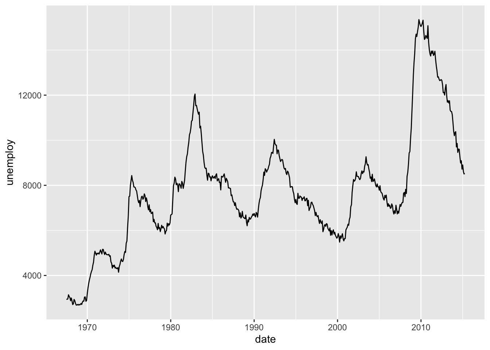

Skript
Sommersemester 2023 | Stand: 2023-06-20
Hinweis: Zum jetzigen Zeitpunkt dieses Skipt in weiten Teilen eine Übersetzung des großartigen Buches R for Data Science.
Dieses Werk ist lizenziert unter einer Creative Commons
Namensnennung-Nicht kommerziell 4.0 International Lizenz. 


Einführung
In diesem Kurs geht es um die Programmiersprache R. Doch was ist das eigentlich?
Was ist R
R ist eine Programmiersprache und eine Umgebung für statistische Berechnungen und Grafiken. Es wurde von Statistik-begeisterten Menschen entwickelt und ist heute eine der am häufigsten verwendeten Sprachen in der Datenanalyse und im Machine Learning. R bietet eine Vielzahl von Paketen und Bibliotheken, die es Benutzern ermöglichen, verschiedene statistische Analysen durchzuführen, Daten zu visualisieren und Modelle zu entwickeln. Die Syntax von R ähnelt der von MATLAB und Python, aber R wurde speziell für die statistische Analyse entwickelt.
Was ist RStudio
RStudio ist eine integrierte Entwicklungsumgebung (IDE) für R. Es ist eine kostenlose und quelloffene Software, die von Posit entwickelt wird und die es Benutzern erleichtert, R-Code zu schreiben und auszuführen. RStudio bietet eine Reihe von Funktionen, die den Workflow erleichtern, einschließlich der Möglichkeit, R-Skripte zu erstellen, Daten und Grafiken zu visualisieren, R-Pakete zu verwalten und RMarkdown-Dokumente zu erstellen, die Text und Code kombinieren. RStudio ist eine der beliebtesten IDEs für R und wird von vielen Benutzern aufgrund seiner Benutzerfreundlichkeit, Funktionalität und Erweiterbarkeit bevorzugt.
Das Tidyverse
Tidyverse ist eine Sammlung von R-Paketen, die von Posit entwickelt wurde, um die Arbeit mit Daten in R zu erleichtern. Tidyverse stellt eine alternative Arbeitsweise zur Datenmanipulation und Visualisierung im Vergleich zur traditionellen Basis-R-Syntax bereit.
Tidyverse bietet eine Vielzahl von Paketen, die speziell für die Datenanalyse konzipiert sind. Diese Pakete sind so konzipiert, dass sie nahtlos miteinander arbeiten und es dem Benutzer ermöglichen, Daten schnell und effektiv zu manipulieren, zu bereinigen, zu transformieren und zu visualisieren. Einige der wichtigsten Pakete in Tidyverse sind:
- ggplot2: Ein Paket für die Erstellung ansprechender und professioneller Grafiken.
- dplyr: Ein Paket für die Datenmanipulation und -filterung.
- tidyr: Ein Paket für die Bereinigung und Umstrukturierung von Daten.
- readr: Ein Paket für den Import von Daten aus verschiedenen Dateiformaten.
Tidyverse hat einige Vorteile gegenüber traditionellen Basis-R-Syntax, insbesondere bei der Datenmanipulation. Der Einsatz des Pipe-Operators (%>%) ermöglicht es Benutzern, eine Folge von Operationen in einer einzigen Zeile zu schreiben, was die Lesbarkeit und den Workflow verbessert. Tidyverse ist auch so konzipiert, dass es gut mit dem Konzept der “tidy data” (saubere Daten) arbeitet, das besagt, dass Daten in einer strukturierten, les- und bearbeitbaren Art und Weise organisiert sein sollten.
Insgesamt ist Tidyverse eine leistungsstarke und intuitive Alternative zur traditionellen Basis-R-Syntax, die es Benutzern ermöglicht, Daten effektiver und schneller zu manipulieren und zu visualisieren. Es hat sich als eine der wichtigsten R-Bibliotheken für die Datenanalyse und -visualisierung etabliert und wird von vielen R-Entwicklern und Datenwissenschaftlern weltweit genutzt.
Tidy Data
Unter diesem Begriff verbirgt sich die Idee, wie Daten aussehen sollen. ,Sie sind in einer spezifischen, standardisierten Form organisiert, um eine einfache Datenanalyse und -visualisierung zu ermöglichen. Die Tidy-Data-Prinzipien wurden von Hadley Wickham, dem Schöpfer von Tidyverse, definiert und beziehen sich auf eine bestimmte Strukturierung von Daten, die in der Regel aus drei Schlüsselelementen besteht:
- Jede Variable hat eine Spalte: Jede Variable, die in den Daten erfasst wird, sollte in einer separaten Spalte aufgeführt werden. Zum Beispiel sollten Alter, Geschlecht und Einkommen jeweils ihre eigene Spalte in den Daten haben.
- Jeder Beobachtung hat eine Zeile: Jede Beobachtung, die in den Daten erfasst wird, sollte in einer separaten Zeile aufgeführt werden. Zum Beispiel sollte jede Person oder jeder Kunde eine eigene Zeile in den Daten haben.
- Jeder Wert hat eine Zelle: Jeder Wert in den Daten sollte in einer einzelnen Zelle aufgeführt werden. Es sollten keine Zellen geben, die mehrere Werte enthalten oder Zellen, die leer sind.
Die Strukturierung von Daten nach diesen Prinzipien erleichtert es den Benutzern, Daten effektiver zu manipulieren, zu transformieren, zu visualisieren und zu analysieren. Tidy data sind auch leichter zu verstehen und zu kommunizieren, da die Daten in einer klaren und standardisierten Form dargestellt werden. Die Verwendung von tidy data ist ein wichtiger Bestandteil von Tidyverse und wird von vielen Data-Science-Experten und -Praktikern empfohlen.

Artwork by Allison Horst on tidy data
Grundlagen: Datawrangling mit dplyr
In diesem Kapitel geht es um das Paket dplyr, was ein unerlässlicher Bestandteil vom tidyverse ist. Wir werden die wichtigsten Ideen anhand von Daten aus dem Paket nycflights13 veranschaulichen.
Voraussetzungen
Somit müssen wir als erstes das tidyverse und den Datensatz laden.
library(nycflights13)
library(tidyverse)
# wird normalerweis automatisch ausgegeben
# tidyverse_conflicts()Achtet hierbei auf die automatisch erscheinende Konfliktmeldung, wenn
tidyverse geladen wird. Diese zeigt an, dass dplyr einige Funktionen von
Base R überschreibt. Wenn du nach dem Laden von dplyr die Basisversion
dieser Funktionen verwenden möchtest, musst du ihre vollständigen Namen
angeben: stats::filter() und stats::lag(). Bis
jetzt haben wir meistens nicht beachtet, aus welchem Paket eine Funktion
stammt, da es in der Regel keine Rolle spielt. Wenn du jedoch genau
wissen musst, aus welchem Paket eine Funktion stammt, verwendest du die
gleiche Syntax wie in R: Paketname::Funktionsname().
Um die grundlegenden dplyr-Verben zu erkunden, werden wir
nycflights13::flights verwenden. Dieser Datensatz enthält alle 336.776
Flüge, die 2013 von New York City abgeflogen sind. Die Daten stammen vom
US Bureau of Transportation Statistics und sind in ?flights
dokumentiert. Dieser Datensatz wir häufig für die Einführung in dplyr
verwendet. Bei Problemen findet man somit fast immer eine Lösung.
flights## # A tibble: 336,776 × 19
## year month day dep_time sched_dep_time dep_delay arr_time sched_arr_time arr_delay carrier flight tailnum origin dest air_time distance hour
## <int> <int> <int> <int> <int> <dbl> <int> <int> <dbl> <chr> <int> <chr> <chr> <chr> <dbl> <dbl> <dbl>
## 1 2013 1 1 517 515 2 830 819 11 UA 1545 N14228 EWR IAH 227 1400 5
## 2 2013 1 1 533 529 4 850 830 20 UA 1714 N24211 LGA IAH 227 1416 5
## 3 2013 1 1 542 540 2 923 850 33 AA 1141 N619AA JFK MIA 160 1089 5
## 4 2013 1 1 544 545 -1 1004 1022 -18 B6 725 N804JB JFK BQN 183 1576 5
## 5 2013 1 1 554 600 -6 812 837 -25 DL 461 N668DN LGA ATL 116 762 6
## 6 2013 1 1 554 558 -4 740 728 12 UA 1696 N39463 EWR ORD 150 719 5
## 7 2013 1 1 555 600 -5 913 854 19 B6 507 N516JB EWR FLL 158 1065 6
## 8 2013 1 1 557 600 -3 709 723 -14 EV 5708 N829AS LGA IAD 53 229 6
## 9 2013 1 1 557 600 -3 838 846 -8 B6 79 N593JB JFK MCO 140 944 6
## 10 2013 1 1 558 600 -2 753 745 8 AA 301 N3ALAA LGA ORD 138 733 6
## # ℹ 336,766 more rows
## # ℹ 2 more variables: minute <dbl>, time_hour <dttm>Flights ist eine Tabelle, eine besondere Art von dataframe, die von
Tidyverse verwendet wird, um einige häufige Probleme zu vermeiden. Der
wichtigste Unterschied zwischen Tibbles und klassischen dataframes liegt
darin, wie Tibbles ausgegeben werden. Sie sind für große Datensätze
konzipiert, daher werden nur die ersten wenigen Zeilen und nur die
Spalten angezeigt, die auf einem Bildschirm passen. Es gibt einige
Optionen, um alles zu sehen. Wenn du RStudio verwendest, ist die
bequemste wahrscheinlich View(flights), die eine
interaktive, scrollbare und filterbare Ansicht öffnet. Ansonsten kannst
du print(flights, width = Inf) verwenden, um alle Spalten
anzuzeigen, oder glimpse() verwenden:
glimpse(flights)## Rows: 336,776
## Columns: 19
## $ year <int> 2013, 2013, 2013, 2013, 2013, 2013, 2013, 2013, 2013, 2013, 2013, 2013, 2013, 2013, 2013, 2013, 2013, 2013, 2013, 2013, 2013, 201…
## $ month <int> 1, 1, 1, 1, 1, 1, 1, 1, 1, 1, 1, 1, 1, 1, 1, 1, 1, 1, 1, 1, 1, 1, 1, 1, 1, 1, 1, 1, 1, 1, 1, 1, 1, 1, 1, 1, 1, 1, 1, 1, 1, 1, 1, …
## $ day <int> 1, 1, 1, 1, 1, 1, 1, 1, 1, 1, 1, 1, 1, 1, 1, 1, 1, 1, 1, 1, 1, 1, 1, 1, 1, 1, 1, 1, 1, 1, 1, 1, 1, 1, 1, 1, 1, 1, 1, 1, 1, 1, 1, …
## $ dep_time <int> 517, 533, 542, 544, 554, 554, 555, 557, 557, 558, 558, 558, 558, 558, 559, 559, 559, 600, 600, 601, 602, 602, 606, 606, 607, 608,…
## $ sched_dep_time <int> 515, 529, 540, 545, 600, 558, 600, 600, 600, 600, 600, 600, 600, 600, 600, 559, 600, 600, 600, 600, 610, 605, 610, 610, 607, 600,…
## $ dep_delay <dbl> 2, 4, 2, -1, -6, -4, -5, -3, -3, -2, -2, -2, -2, -2, -1, 0, -1, 0, 0, 1, -8, -3, -4, -4, 0, 8, 11, 3, 0, 0, -8, 13, -4, -6, -6, -…
## $ arr_time <int> 830, 850, 923, 1004, 812, 740, 913, 709, 838, 753, 849, 853, 924, 923, 941, 702, 854, 851, 837, 844, 812, 821, 858, 837, 858, 807…
## $ sched_arr_time <int> 819, 830, 850, 1022, 837, 728, 854, 723, 846, 745, 851, 856, 917, 937, 910, 706, 902, 858, 825, 850, 820, 805, 910, 845, 915, 735…
## $ arr_delay <dbl> 11, 20, 33, -18, -25, 12, 19, -14, -8, 8, -2, -3, 7, -14, 31, -4, -8, -7, 12, -6, -8, 16, -12, -8, -17, 32, 14, 4, -21, -9, 3, 5,…
## $ carrier <chr> "UA", "UA", "AA", "B6", "DL", "UA", "B6", "EV", "B6", "AA", "B6", "B6", "UA", "UA", "AA", "B6", "UA", "B6", "MQ", "B6", "DL", "MQ…
## $ flight <int> 1545, 1714, 1141, 725, 461, 1696, 507, 5708, 79, 301, 49, 71, 194, 1124, 707, 1806, 1187, 371, 4650, 343, 1919, 4401, 1895, 1743,…
## $ tailnum <chr> "N14228", "N24211", "N619AA", "N804JB", "N668DN", "N39463", "N516JB", "N829AS", "N593JB", "N3ALAA", "N793JB", "N657JB", "N29129",…
## $ origin <chr> "EWR", "LGA", "JFK", "JFK", "LGA", "EWR", "EWR", "LGA", "JFK", "LGA", "JFK", "JFK", "JFK", "EWR", "LGA", "JFK", "EWR", "LGA", "LG…
## $ dest <chr> "IAH", "IAH", "MIA", "BQN", "ATL", "ORD", "FLL", "IAD", "MCO", "ORD", "PBI", "TPA", "LAX", "SFO", "DFW", "BOS", "LAS", "FLL", "AT…
## $ air_time <dbl> 227, 227, 160, 183, 116, 150, 158, 53, 140, 138, 149, 158, 345, 361, 257, 44, 337, 152, 134, 147, 170, 105, 152, 128, 157, 139, 3…
## $ distance <dbl> 1400, 1416, 1089, 1576, 762, 719, 1065, 229, 944, 733, 1028, 1005, 2475, 2565, 1389, 187, 2227, 1076, 762, 1023, 1020, 502, 1085,…
## $ hour <dbl> 5, 5, 5, 5, 6, 5, 6, 6, 6, 6, 6, 6, 6, 6, 6, 5, 6, 6, 6, 6, 6, 6, 6, 6, 6, 6, 6, 6, 6, 6, 6, 6, 6, 6, 6, 6, 6, 6, 6, 6, 6, 6, 6, …
## $ minute <dbl> 15, 29, 40, 45, 0, 58, 0, 0, 0, 0, 0, 0, 0, 0, 0, 59, 0, 0, 0, 0, 10, 5, 10, 10, 7, 0, 0, 10, 15, 15, 30, 10, 27, 30, 30, 30, 30,…
## $ time_hour <dttm> 2013-01-01 05:00:00, 2013-01-01 05:00:00, 2013-01-01 05:00:00, 2013-01-01 05:00:00, 2013-01-01 06:00:00, 2013-01-01 05:00:00, 20…In beiden Ansichten werden den Variablennamen Abkürzungen angehängt,
die dir den Typ jeder Variablen mitteilen:
Basics
Du wirst gleich die wichtigsten dplyr Verben (Funktionen) lernen, mit denen du die meisten deiner Datenaufbereitungs-Herausforderungen bewältigen kannst. Bevor wir jedoch auf ihre individuellen Unterschiede eingehen, ist es wichtig zu erwähnen, was sie gemeinsam haben:
- Das erste Argument ist immer ein dataframe
- Die folgenden Argumente beschreiben in der Regel, auf welche Spalten die Operationen angewendet werden sollen, indem sie die Variablennamen (ohne Anführungszeichen) verwenden.
- Das Ergebnis ist immer ein neuer dataframe
Da jedes Verb eine Sache gut macht, erfordert die Lösung komplexer Probleme normalerweise die Kombination mehrerer Verben, und wir werden dies mit dem Pipe-Operator %>% tun. Kurz gesagt: der Pipe-Operator nimmt das, was links von ihm steht, und leitet es an die Funktion rechts davon weiter, so dass x %>% f(y) äquivalent zu f(x, y) ist und x %>% f(y) %>% g(z) äquivalent zu g(f(x, y), z) ist. Der einfachste Weg, den Pipe-Operator auszusprechen, ist “dann”. Dadurch ist es möglich, eine Vorstellung von dem folgenden Code zu bekommen, auch wenn du die Details noch nicht kennst:
flights %>%
filter(dest == "IAH") %>%
group_by(year, month, day) %>%
summarize(
arr_delay = mean(arr_delay, na.rm = TRUE)
)## # A tibble: 365 × 4
## # Groups: year, month [12]
## year month day arr_delay
## <int> <int> <int> <dbl>
## 1 2013 1 1 17.8
## 2 2013 1 2 7
## 3 2013 1 3 18.3
## 4 2013 1 4 -3.2
## 5 2013 1 5 20.2
## 6 2013 1 6 9.28
## 7 2013 1 7 -7.74
## 8 2013 1 8 7.79
## 9 2013 1 9 18.1
## 10 2013 1 10 6.68
## # ℹ 355 more rowsDer Code filtert die Flüge, die nach “IAH” (Houston Intercontinental Airport) gehen, gruppiert dann die verbleibenden Flüge nach Jahr, Monat und Tag und berechnet dann den durchschnittlichen Ankunftsverspätung (“arr_delay”) pro Gruppe. Daher gibt der Code eine Tabelle zurück, die die durchschnittlichen Ankunftsverspätungen für jeden Tag, Monat und Jahr enthält, an dem Flüge am Houston Intercontinental Airport (IAH) ankamen.
Zeilen
Die wichtigsten Verben, die auf Zeilen eines Datensatzes wirken, sind
filter(), das eine bestimmte Auswahl an Zeilen anzeigt,
ohne ihre Reihenfolge zu ändern, und arrange(), das die
Reihenfolge der Zeilen anzeigt, ohne die vorhandenen Zeilen zu ändern.
Beide Funktionen wirken sich nur auf die Zeilen aus, während die Spalten
unverändert bleiben. Wir werden auch distinct() besprechen,
das Zeilen mit eindeutigen Werten findet, aber im Gegensatz zu
arrange() und filter() kann es optional auch
die Spalten ändern.
filter()
filter() extrahiert nur die Zeilen aus einem Datensatz,
die bestimmten Bedingungen entsprechen. Diese Bedingungen können
logische Operationen oder Funktionen enthalten, die auf bestimmte
Spalten angewendet werden. Es werden auch mehrere Bedingungen
akzeptiert.

Artwork by Allison Horst on filter() function
Das erste Argument ist wie immer der dataframe. Das zweite und die folgenden Argumente sind die Bedingungen, die erfüllt sein müssen. Zum Beispiel könnten wir alle Flüge finden, die mit mehr als 240 Minuten (vier Stunden) Verspätung abgeflogen sind:
flights %>%
filter(dep_delay > 240)## # A tibble: 1,524 × 19
## year month day dep_time sched_dep_time dep_delay arr_time sched_arr_time arr_delay carrier flight tailnum origin dest air_time distance hour
## <int> <int> <int> <int> <int> <dbl> <int> <int> <dbl> <chr> <int> <chr> <chr> <chr> <dbl> <dbl> <dbl>
## 1 2013 1 1 848 1835 853 1001 1950 851 MQ 3944 N942MQ JFK BWI 41 184 18
## 2 2013 1 1 1815 1325 290 2120 1542 338 EV 4417 N17185 EWR OMA 213 1134 13
## 3 2013 1 1 1842 1422 260 1958 1535 263 EV 4633 N18120 EWR BTV 46 266 14
## 4 2013 1 1 2115 1700 255 2330 1920 250 9E 3347 N924XJ JFK CVG 115 589 17
## 5 2013 1 1 2205 1720 285 46 2040 246 AA 1999 N5DNAA EWR MIA 146 1085 17
## 6 2013 1 1 2343 1724 379 314 1938 456 EV 4321 N21197 EWR MCI 222 1092 17
## 7 2013 1 2 1332 904 268 1616 1128 288 EV 4364 N41104 EWR MCI 203 1092 9
## 8 2013 1 2 1412 838 334 1710 1147 323 UA 468 N474UA EWR MCO 150 937 8
## 9 2013 1 2 1607 1030 337 2003 1355 368 AA 179 N324AA JFK SFO 346 2586 10
## 10 2013 1 2 2131 1512 379 2340 1741 359 UA 488 N593UA LGA DEN 228 1620 15
## # ℹ 1,514 more rows
## # ℹ 2 more variables: minute <dbl>, time_hour <dttm>Neben > (größer als) können Sie auch >= (größer als oder gleich), < (kleiner als), <= (kleiner als oder gleich), == (gleich) und != (nicht gleich) verwenden. Sie können Bedingungen auch mit & oder , kombinieren, um “und” (beide Bedingungen) oder mit | (eine der beiden Bedingungen) zu kennzeichnen. Allgemein kennt R verschiedene logische Operatoren, die in der Programmierung verwendet werden können, um Bedingungen zu verknüpfen Hier sind die wichtigsten logischen Operatoren in R:
!(Negation): Dieser Operator wird verwendet, um den logischen Wert einer Aussage umzukehren. Zum Beispiel gibt !TRUE den Wert FALSE zurück und umgekehrt.&(UND): Dieser Operator gibt TRUE zurück, wenn beide Bedingungen, die links und rechts von ihm stehen, TRUE sind. Ansonsten gibt er FALSE zurück.|(ODER): Dieser Operator gibt TRUE zurück, wenn mindestens eine der beiden Bedingungen, die links und rechts von ihm stehen, TRUE ist. Ansonsten gibt er FALSE zurück.
Dann gibt es noch Kurzschluss-UND und -ODER. Diese funktionieren ähnlich wie UND und ODER, aber sie evaluieren Bedingungen auf eine etwas andere Art und Weise. Kurzschluss-UND und -ODER sind nützlich, wenn man Bedingungen hat, die zeitaufwendig sind, und man nicht beide Bedingungen auswerten muss, um die Entscheidung zu treffen.
&&(Kurzschluss-UND): Dieser Operator evaluiert die linke Bedingung zuerst und nur wenn diese TRUE ist, wird die rechte Bedingung ausgewertet. Wenn die linke Bedingung FALSE ist, wird die rechte Bedingung nicht ausgewertet.||(Kurzschluss-ODER): Dieser Operator funktioniert analog und gibt nur dann TRUE zurück, wenn mindestens eine der beiden Bedingungen TRUE ist und die linke Bedingung nicht TRUE auswertet.
Aber zurück zu unserem Datensatz. Wenn nach Tag und
Monat gefiltert werden soll, müssen nur die beiden Bedingungen mit einem
, oder & verknüpft werden. Gleiches gilt
für den ODER-Operator.
# Flüge am 1. Januar
flights %>%
filter(month == 1 & day == 1)## # A tibble: 842 × 19
## year month day dep_time sched_dep_time dep_delay arr_time sched_arr_time arr_delay carrier flight tailnum origin dest air_time distance hour
## <int> <int> <int> <int> <int> <dbl> <int> <int> <dbl> <chr> <int> <chr> <chr> <chr> <dbl> <dbl> <dbl>
## 1 2013 1 1 517 515 2 830 819 11 UA 1545 N14228 EWR IAH 227 1400 5
## 2 2013 1 1 533 529 4 850 830 20 UA 1714 N24211 LGA IAH 227 1416 5
## 3 2013 1 1 542 540 2 923 850 33 AA 1141 N619AA JFK MIA 160 1089 5
## 4 2013 1 1 544 545 -1 1004 1022 -18 B6 725 N804JB JFK BQN 183 1576 5
## 5 2013 1 1 554 600 -6 812 837 -25 DL 461 N668DN LGA ATL 116 762 6
## 6 2013 1 1 554 558 -4 740 728 12 UA 1696 N39463 EWR ORD 150 719 5
## 7 2013 1 1 555 600 -5 913 854 19 B6 507 N516JB EWR FLL 158 1065 6
## 8 2013 1 1 557 600 -3 709 723 -14 EV 5708 N829AS LGA IAD 53 229 6
## 9 2013 1 1 557 600 -3 838 846 -8 B6 79 N593JB JFK MCO 140 944 6
## 10 2013 1 1 558 600 -2 753 745 8 AA 301 N3ALAA LGA ORD 138 733 6
## # ℹ 832 more rows
## # ℹ 2 more variables: minute <dbl>, time_hour <dttm># oder
# Flüge am 1. Januar
flights %>%
filter(month == 1, day == 1)## # A tibble: 842 × 19
## year month day dep_time sched_dep_time dep_delay arr_time sched_arr_time arr_delay carrier flight tailnum origin dest air_time distance hour
## <int> <int> <int> <int> <int> <dbl> <int> <int> <dbl> <chr> <int> <chr> <chr> <chr> <dbl> <dbl> <dbl>
## 1 2013 1 1 517 515 2 830 819 11 UA 1545 N14228 EWR IAH 227 1400 5
## 2 2013 1 1 533 529 4 850 830 20 UA 1714 N24211 LGA IAH 227 1416 5
## 3 2013 1 1 542 540 2 923 850 33 AA 1141 N619AA JFK MIA 160 1089 5
## 4 2013 1 1 544 545 -1 1004 1022 -18 B6 725 N804JB JFK BQN 183 1576 5
## 5 2013 1 1 554 600 -6 812 837 -25 DL 461 N668DN LGA ATL 116 762 6
## 6 2013 1 1 554 558 -4 740 728 12 UA 1696 N39463 EWR ORD 150 719 5
## 7 2013 1 1 555 600 -5 913 854 19 B6 507 N516JB EWR FLL 158 1065 6
## 8 2013 1 1 557 600 -3 709 723 -14 EV 5708 N829AS LGA IAD 53 229 6
## 9 2013 1 1 557 600 -3 838 846 -8 B6 79 N593JB JFK MCO 140 944 6
## 10 2013 1 1 558 600 -2 753 745 8 AA 301 N3ALAA LGA ORD 138 733 6
## # ℹ 832 more rows
## # ℹ 2 more variables: minute <dbl>, time_hour <dttm># Flüge im Januar oder Febraur
flights %>%
filter(month == 1 | month == 2)## # A tibble: 51,955 × 19
## year month day dep_time sched_dep_time dep_delay arr_time sched_arr_time arr_delay carrier flight tailnum origin dest air_time distance hour
## <int> <int> <int> <int> <int> <dbl> <int> <int> <dbl> <chr> <int> <chr> <chr> <chr> <dbl> <dbl> <dbl>
## 1 2013 1 1 517 515 2 830 819 11 UA 1545 N14228 EWR IAH 227 1400 5
## 2 2013 1 1 533 529 4 850 830 20 UA 1714 N24211 LGA IAH 227 1416 5
## 3 2013 1 1 542 540 2 923 850 33 AA 1141 N619AA JFK MIA 160 1089 5
## 4 2013 1 1 544 545 -1 1004 1022 -18 B6 725 N804JB JFK BQN 183 1576 5
## 5 2013 1 1 554 600 -6 812 837 -25 DL 461 N668DN LGA ATL 116 762 6
## 6 2013 1 1 554 558 -4 740 728 12 UA 1696 N39463 EWR ORD 150 719 5
## 7 2013 1 1 555 600 -5 913 854 19 B6 507 N516JB EWR FLL 158 1065 6
## 8 2013 1 1 557 600 -3 709 723 -14 EV 5708 N829AS LGA IAD 53 229 6
## 9 2013 1 1 557 600 -3 838 846 -8 B6 79 N593JB JFK MCO 140 944 6
## 10 2013 1 1 558 600 -2 753 745 8 AA 301 N3ALAA LGA ORD 138 733 6
## # ℹ 51,945 more rows
## # ℹ 2 more variables: minute <dbl>, time_hour <dttm>Es gibt eine nützliche Abkürzung, wenn du |
und== kombinieren willst: %in%. Damit bleiben
Zeilen erhalten, in denen die Variable einem der Werte auf der rechten
Seite entspricht:
# Ein kürzerer Weg zur Auswahl von Flügen, die im Januar oder Februar abfliegen
flights %>%
filter(month %in% c(1, 2))## # A tibble: 51,955 × 19
## year month day dep_time sched_dep_time dep_delay arr_time sched_arr_time arr_delay carrier flight tailnum origin dest air_time distance hour
## <int> <int> <int> <int> <int> <dbl> <int> <int> <dbl> <chr> <int> <chr> <chr> <chr> <dbl> <dbl> <dbl>
## 1 2013 1 1 517 515 2 830 819 11 UA 1545 N14228 EWR IAH 227 1400 5
## 2 2013 1 1 533 529 4 850 830 20 UA 1714 N24211 LGA IAH 227 1416 5
## 3 2013 1 1 542 540 2 923 850 33 AA 1141 N619AA JFK MIA 160 1089 5
## 4 2013 1 1 544 545 -1 1004 1022 -18 B6 725 N804JB JFK BQN 183 1576 5
## 5 2013 1 1 554 600 -6 812 837 -25 DL 461 N668DN LGA ATL 116 762 6
## 6 2013 1 1 554 558 -4 740 728 12 UA 1696 N39463 EWR ORD 150 719 5
## 7 2013 1 1 555 600 -5 913 854 19 B6 507 N516JB EWR FLL 158 1065 6
## 8 2013 1 1 557 600 -3 709 723 -14 EV 5708 N829AS LGA IAD 53 229 6
## 9 2013 1 1 557 600 -3 838 846 -8 B6 79 N593JB JFK MCO 140 944 6
## 10 2013 1 1 558 600 -2 753 745 8 AA 301 N3ALAA LGA ORD 138 733 6
## # ℹ 51,945 more rows
## # ℹ 2 more variables: minute <dbl>, time_hour <dttm>Durch filter() wird der dataframe nicht überschrieben,
sondern nur die Auswahl in der Konsole ausgegeben. Um das Ergebnis zu
speichern, musst den Zuweisungsoperator <- verwenden.
Das geht am Anfang oder am Ende, dann aber ander herum:
jan1 <- flights %>%
filter(month == 1 & day == 1)
flights %>%
filter(month == 1 & day == 1) -> jan1arrange()
Mit arrange() können diue Daten in einem dataframe nach
einer oder mehreren Spalten sortiert werden. Es benötigt einen dataframe
und eine Reihe von Spaltennamen (oder kompliziertere Ausdrücke), nach
denen geordnet werden soll. Wenn Sie mehr als einen Spaltennamen
angeben, wird jede zusätzliche Spalte verwendet, um Übereinstimmungen in
den Werten der vorangegangenen Spalten aufzudröseln. Der folgende Code
sortiert zum Beispiel nach der Abflugzeit, die auf vier Spalten verteilt
ist. Wir erhalten zuerst die frühesten Jahre, dann innerhalb eines
Jahres die frühesten Monate, usw.
flights %>%
arrange(year, month, day, dep_time)## # A tibble: 336,776 × 19
## year month day dep_time sched_dep_time dep_delay arr_time sched_arr_time arr_delay carrier flight tailnum origin dest air_time distance hour
## <int> <int> <int> <int> <int> <dbl> <int> <int> <dbl> <chr> <int> <chr> <chr> <chr> <dbl> <dbl> <dbl>
## 1 2013 1 1 517 515 2 830 819 11 UA 1545 N14228 EWR IAH 227 1400 5
## 2 2013 1 1 533 529 4 850 830 20 UA 1714 N24211 LGA IAH 227 1416 5
## 3 2013 1 1 542 540 2 923 850 33 AA 1141 N619AA JFK MIA 160 1089 5
## 4 2013 1 1 544 545 -1 1004 1022 -18 B6 725 N804JB JFK BQN 183 1576 5
## 5 2013 1 1 554 600 -6 812 837 -25 DL 461 N668DN LGA ATL 116 762 6
## 6 2013 1 1 554 558 -4 740 728 12 UA 1696 N39463 EWR ORD 150 719 5
## 7 2013 1 1 555 600 -5 913 854 19 B6 507 N516JB EWR FLL 158 1065 6
## 8 2013 1 1 557 600 -3 709 723 -14 EV 5708 N829AS LGA IAD 53 229 6
## 9 2013 1 1 557 600 -3 838 846 -8 B6 79 N593JB JFK MCO 140 944 6
## 10 2013 1 1 558 600 -2 753 745 8 AA 301 N3ALAA LGA ORD 138 733 6
## # ℹ 336,766 more rows
## # ℹ 2 more variables: minute <dbl>, time_hour <dttm>Du kannsz desc() für eine Spalte innerhalb von
arrange() verwenden, um den dataframe auf der Grundlage
dieser Spalte in absteigender Reihenfolge (von groß nach klein) neu zu
ordnen. Zum Beispiel ordnet dieser Code die Flüge von der größten bis
zur geringsten Verspätung:
flights %>%
arrange(desc(dep_delay))## # A tibble: 336,776 × 19
## year month day dep_time sched_dep_time dep_delay arr_time sched_arr_time arr_delay carrier flight tailnum origin dest air_time distance hour
## <int> <int> <int> <int> <int> <dbl> <int> <int> <dbl> <chr> <int> <chr> <chr> <chr> <dbl> <dbl> <dbl>
## 1 2013 1 9 641 900 1301 1242 1530 1272 HA 51 N384HA JFK HNL 640 4983 9
## 2 2013 6 15 1432 1935 1137 1607 2120 1127 MQ 3535 N504MQ JFK CMH 74 483 19
## 3 2013 1 10 1121 1635 1126 1239 1810 1109 MQ 3695 N517MQ EWR ORD 111 719 16
## 4 2013 9 20 1139 1845 1014 1457 2210 1007 AA 177 N338AA JFK SFO 354 2586 18
## 5 2013 7 22 845 1600 1005 1044 1815 989 MQ 3075 N665MQ JFK CVG 96 589 16
## 6 2013 4 10 1100 1900 960 1342 2211 931 DL 2391 N959DL JFK TPA 139 1005 19
## 7 2013 3 17 2321 810 911 135 1020 915 DL 2119 N927DA LGA MSP 167 1020 8
## 8 2013 6 27 959 1900 899 1236 2226 850 DL 2007 N3762Y JFK PDX 313 2454 19
## 9 2013 7 22 2257 759 898 121 1026 895 DL 2047 N6716C LGA ATL 109 762 7
## 10 2013 12 5 756 1700 896 1058 2020 878 AA 172 N5DMAA EWR MIA 149 1085 17
## # ℹ 336,766 more rows
## # ℹ 2 more variables: minute <dbl>, time_hour <dttm>Die Anzahl der Zeilen ändert sich dabei nicht, da nicht gefiltert wird.
distinct()
distinct() findet alle eindeutigen Zeilen in einem
Datensatz. Technisch gesehen werden also in erster Linie die Zeilen
bearbeitet. In den meisten Fällen wirst du jedoch die eindeutige
Kombination einiger Variablen benötigen, weshalb optional auch
Spaltennamen angegeben werden können:
# Doppelte Zeilen entfernen, falls vorhanden
flights %>%
distinct()## # A tibble: 336,776 × 19
## year month day dep_time sched_dep_time dep_delay arr_time sched_arr_time arr_delay carrier flight tailnum origin dest air_time distance hour
## <int> <int> <int> <int> <int> <dbl> <int> <int> <dbl> <chr> <int> <chr> <chr> <chr> <dbl> <dbl> <dbl>
## 1 2013 1 1 517 515 2 830 819 11 UA 1545 N14228 EWR IAH 227 1400 5
## 2 2013 1 1 533 529 4 850 830 20 UA 1714 N24211 LGA IAH 227 1416 5
## 3 2013 1 1 542 540 2 923 850 33 AA 1141 N619AA JFK MIA 160 1089 5
## 4 2013 1 1 544 545 -1 1004 1022 -18 B6 725 N804JB JFK BQN 183 1576 5
## 5 2013 1 1 554 600 -6 812 837 -25 DL 461 N668DN LGA ATL 116 762 6
## 6 2013 1 1 554 558 -4 740 728 12 UA 1696 N39463 EWR ORD 150 719 5
## 7 2013 1 1 555 600 -5 913 854 19 B6 507 N516JB EWR FLL 158 1065 6
## 8 2013 1 1 557 600 -3 709 723 -14 EV 5708 N829AS LGA IAD 53 229 6
## 9 2013 1 1 557 600 -3 838 846 -8 B6 79 N593JB JFK MCO 140 944 6
## 10 2013 1 1 558 600 -2 753 745 8 AA 301 N3ALAA LGA ORD 138 733 6
## # ℹ 336,766 more rows
## # ℹ 2 more variables: minute <dbl>, time_hour <dttm># Alle eindeutigen Herkunfts- und Zielpaare finden
flights %>%
distinct(origin, dest)## # A tibble: 224 × 2
## origin dest
## <chr> <chr>
## 1 EWR IAH
## 2 LGA IAH
## 3 JFK MIA
## 4 JFK BQN
## 5 LGA ATL
## 6 EWR ORD
## 7 EWR FLL
## 8 LGA IAD
## 9 JFK MCO
## 10 LGA ORD
## # ℹ 214 more rowsWenn du beim Filtern nach eindeutigen Zeilen auch andere Spalten
beibehalten willst, kannst du alternativ die Option
.keep_all = TRUE verwenden.
flights %>%
distinct(origin, dest, .keep_all = TRUE)## # A tibble: 224 × 19
## year month day dep_time sched_dep_time dep_delay arr_time sched_arr_time arr_delay carrier flight tailnum origin dest air_time distance hour
## <int> <int> <int> <int> <int> <dbl> <int> <int> <dbl> <chr> <int> <chr> <chr> <chr> <dbl> <dbl> <dbl>
## 1 2013 1 1 517 515 2 830 819 11 UA 1545 N14228 EWR IAH 227 1400 5
## 2 2013 1 1 533 529 4 850 830 20 UA 1714 N24211 LGA IAH 227 1416 5
## 3 2013 1 1 542 540 2 923 850 33 AA 1141 N619AA JFK MIA 160 1089 5
## 4 2013 1 1 544 545 -1 1004 1022 -18 B6 725 N804JB JFK BQN 183 1576 5
## 5 2013 1 1 554 600 -6 812 837 -25 DL 461 N668DN LGA ATL 116 762 6
## 6 2013 1 1 554 558 -4 740 728 12 UA 1696 N39463 EWR ORD 150 719 5
## 7 2013 1 1 555 600 -5 913 854 19 B6 507 N516JB EWR FLL 158 1065 6
## 8 2013 1 1 557 600 -3 709 723 -14 EV 5708 N829AS LGA IAD 53 229 6
## 9 2013 1 1 557 600 -3 838 846 -8 B6 79 N593JB JFK MCO 140 944 6
## 10 2013 1 1 558 600 -2 753 745 8 AA 301 N3ALAA LGA ORD 138 733 6
## # ℹ 214 more rows
## # ℹ 2 more variables: minute <dbl>, time_hour <dttm>Es ist kein Zufall, dass alle diese eindeutigen Flüge am 1. Januar
stattfinden: distinct() findet das erste Vorkommen einer
eindeutigen Zeile im Datensatz und verwirft den Rest.
Wenn du stattdessen die Anzahl der Vorkommen ermitteln willst, ist es
besser, distinct() gegen count()
auszutauschen, und mit dem Argument sort = TRUE kannst du
sie in absteigender Reihenfolge der Anzahl der Vorkommen anordnen.
flights %>%
count(origin, dest, sort = TRUE)## # A tibble: 224 × 3
## origin dest n
## <chr> <chr> <int>
## 1 JFK LAX 11262
## 2 LGA ATL 10263
## 3 LGA ORD 8857
## 4 JFK SFO 8204
## 5 LGA CLT 6168
## 6 EWR ORD 6100
## 7 JFK BOS 5898
## 8 LGA MIA 5781
## 9 JFK MCO 5464
## 10 EWR BOS 5327
## # ℹ 214 more rowsÜbung 1
Finde in einer einzelnen Pipeline alle Flüge, die jede der folgenden Bedingungen erfüllen:
- Hatten eine Ankunftsverspätung von zwei oder mehr Stunden
- Fliegen nach Houston (IAH oder HOU)
- Wurden von United, American oder Delta durchgeführt
- Sind im Sommer abgeflogen (Juli, August und September)
- Sind mehr als zwei Stunden zu spät angekommen, sind aber nicht zu spät abgeflogen
- Waren um mindestens eine Stunde verspätet, haben aber während des Fluges mehr als 30 Minuten aufgeholt
Sortiere die Flüge, um die Flüge mit den längsten Abflugverspätungen zu finden. Finde die Flüge, die am frühesten am Morgen abgeflogen sind.
Sortiere die Flüge, um die schnellsten Flüge zu finden. (Tipp: Versuche eine mathematische Berechnung in deiner Funktion zu verwenden.)
Welche Flüge sind die weiteste Strecke geflogen? Welche haben die kürzeste Strecke zurückgelegt?
Spielt es eine Rolle, in welcher Reihenfolge du filter() und arrange() verwendest, wenn du beide verwendest? Warum / warum nicht? Denke über die Ergebnisse und die Arbeit nach, die die Funktionen leisten müssten.
Spalten
Es gibt vier wichtige Verben, die sich auf die Spalten auswirken,
ohne die Zeilen zu verändern: mutate() erzeugt neue
Spalten, die von den vorhandenen Spalten abgeleitet sind,
select() ändert, welche Spalten angezeigt werden,
rename() ändert die Namen der Spalten und
relocate() ändert die Positionen der Spalten.
mutate()
Die Aufgabe von mutate() ist es, neue Spalten
hinzuzufügen, die aus den vorhandenen Spalten berechnet werden. In den
Transformationskapiteln werden Sie eine große Anzahl von Funktionen
kennenlernen, mit denen Sie verschiedene Arten von Variablen
manipulieren können.

Artwork by Allison Horst on mutate() function
Für den Moment bleiben wir bei der grundlegenden Algebra, die es uns ermöglicht, den Gewinn, die Zeit, die ein verspäteter Flug in der Luft verbracht hat, und die Geschwindigkeit in Meilen pro Stunde zu berechnen:
flights %>%
mutate(
gain = dep_delay - arr_delay,
speed = distance / air_time * 60
)## # A tibble: 336,776 × 21
## year month day dep_time sched_dep_time dep_delay arr_time sched_arr_time arr_delay carrier flight tailnum origin dest air_time distance hour
## <int> <int> <int> <int> <int> <dbl> <int> <int> <dbl> <chr> <int> <chr> <chr> <chr> <dbl> <dbl> <dbl>
## 1 2013 1 1 517 515 2 830 819 11 UA 1545 N14228 EWR IAH 227 1400 5
## 2 2013 1 1 533 529 4 850 830 20 UA 1714 N24211 LGA IAH 227 1416 5
## 3 2013 1 1 542 540 2 923 850 33 AA 1141 N619AA JFK MIA 160 1089 5
## 4 2013 1 1 544 545 -1 1004 1022 -18 B6 725 N804JB JFK BQN 183 1576 5
## 5 2013 1 1 554 600 -6 812 837 -25 DL 461 N668DN LGA ATL 116 762 6
## 6 2013 1 1 554 558 -4 740 728 12 UA 1696 N39463 EWR ORD 150 719 5
## 7 2013 1 1 555 600 -5 913 854 19 B6 507 N516JB EWR FLL 158 1065 6
## 8 2013 1 1 557 600 -3 709 723 -14 EV 5708 N829AS LGA IAD 53 229 6
## 9 2013 1 1 557 600 -3 838 846 -8 B6 79 N593JB JFK MCO 140 944 6
## 10 2013 1 1 558 600 -2 753 745 8 AA 301 N3ALAA LGA ORD 138 733 6
## # ℹ 336,766 more rows
## # ℹ 4 more variables: minute <dbl>, time_hour <dttm>, gain <dbl>, speed <dbl>Standardmäßig fügt mutate() neue Spalten auf der rechten
Seite des Datensatzes hinzu, was es schwierig macht zu sehen, was hier
passiert. Wir können das Argument .before verwenden, um die Variablen
stattdessen auf der linken Seite hinzuzufügen
flights %>%
mutate(
gain = dep_delay - arr_delay,
speed = distance / air_time * 60,
.before = 1
)## # A tibble: 336,776 × 21
## gain speed year month day dep_time sched_dep_time dep_delay arr_time sched_arr_time arr_delay carrier flight tailnum origin dest air_time distance
## <dbl> <dbl> <int> <int> <int> <int> <int> <dbl> <int> <int> <dbl> <chr> <int> <chr> <chr> <chr> <dbl> <dbl>
## 1 -9 370. 2013 1 1 517 515 2 830 819 11 UA 1545 N14228 EWR IAH 227 1400
## 2 -16 374. 2013 1 1 533 529 4 850 830 20 UA 1714 N24211 LGA IAH 227 1416
## 3 -31 408. 2013 1 1 542 540 2 923 850 33 AA 1141 N619AA JFK MIA 160 1089
## 4 17 517. 2013 1 1 544 545 -1 1004 1022 -18 B6 725 N804JB JFK BQN 183 1576
## 5 19 394. 2013 1 1 554 600 -6 812 837 -25 DL 461 N668DN LGA ATL 116 762
## 6 -16 288. 2013 1 1 554 558 -4 740 728 12 UA 1696 N39463 EWR ORD 150 719
## 7 -24 404. 2013 1 1 555 600 -5 913 854 19 B6 507 N516JB EWR FLL 158 1065
## 8 11 259. 2013 1 1 557 600 -3 709 723 -14 EV 5708 N829AS LGA IAD 53 229
## 9 5 405. 2013 1 1 557 600 -3 838 846 -8 B6 79 N593JB JFK MCO 140 944
## 10 -10 319. 2013 1 1 558 600 -2 753 745 8 AA 301 N3ALAA LGA ORD 138 733
## # ℹ 336,766 more rows
## # ℹ 3 more variables: hour <dbl>, minute <dbl>, time_hour <dttm>Das . ist ein Zeichen dafür, dass .before ein Argument für die Funktion ist und nicht der Name einer dritten neuen Variablen, die wir erstellen. Du kannst auch .after verwenden, um nach einer Variablen hinzuzufügen, und sowohl in .before als auch in .after kannst du den Variablennamen anstelle einer Position verwenden. Zum Beispiel könnten wir die neuen Variablen nach dem Tag einfügen:
flights %>%
mutate(
gain = dep_delay - arr_delay,
speed = distance / air_time * 60,
.after = day
)## # A tibble: 336,776 × 21
## year month day gain speed dep_time sched_dep_time dep_delay arr_time sched_arr_time arr_delay carrier flight tailnum origin dest air_time distance
## <int> <int> <int> <dbl> <dbl> <int> <int> <dbl> <int> <int> <dbl> <chr> <int> <chr> <chr> <chr> <dbl> <dbl>
## 1 2013 1 1 -9 370. 517 515 2 830 819 11 UA 1545 N14228 EWR IAH 227 1400
## 2 2013 1 1 -16 374. 533 529 4 850 830 20 UA 1714 N24211 LGA IAH 227 1416
## 3 2013 1 1 -31 408. 542 540 2 923 850 33 AA 1141 N619AA JFK MIA 160 1089
## 4 2013 1 1 17 517. 544 545 -1 1004 1022 -18 B6 725 N804JB JFK BQN 183 1576
## 5 2013 1 1 19 394. 554 600 -6 812 837 -25 DL 461 N668DN LGA ATL 116 762
## 6 2013 1 1 -16 288. 554 558 -4 740 728 12 UA 1696 N39463 EWR ORD 150 719
## 7 2013 1 1 -24 404. 555 600 -5 913 854 19 B6 507 N516JB EWR FLL 158 1065
## 8 2013 1 1 11 259. 557 600 -3 709 723 -14 EV 5708 N829AS LGA IAD 53 229
## 9 2013 1 1 5 405. 557 600 -3 838 846 -8 B6 79 N593JB JFK MCO 140 944
## 10 2013 1 1 -10 319. 558 600 -2 753 745 8 AA 301 N3ALAA LGA ORD 138 733
## # ℹ 336,766 more rows
## # ℹ 3 more variables: hour <dbl>, minute <dbl>, time_hour <dttm>Alternativ kannst du mit dem Argument .keep steuern, welche Variablen beibehalten werden. Ein besonders nützliches Argument ist “used”, das angibt, dass nur die Spalten beibehalten werden sollen, die am mutate()-Schritt beteiligt waren oder erstellt wurden. Die folgende Ausgabe enthält zum Beispiel nur die Variablen dep_delay, arr_delay, air_time, gain, hours und gain_per_hour.
flights %>%
mutate(
gain = dep_delay - arr_delay,
hours = air_time / 60,
gain_per_hour = gain / hours,
.keep = "used"
)## # A tibble: 336,776 × 6
## dep_delay arr_delay air_time gain hours gain_per_hour
## <dbl> <dbl> <dbl> <dbl> <dbl> <dbl>
## 1 2 11 227 -9 3.78 -2.38
## 2 4 20 227 -16 3.78 -4.23
## 3 2 33 160 -31 2.67 -11.6
## 4 -1 -18 183 17 3.05 5.57
## 5 -6 -25 116 19 1.93 9.83
## 6 -4 12 150 -16 2.5 -6.4
## 7 -5 19 158 -24 2.63 -9.11
## 8 -3 -14 53 11 0.883 12.5
## 9 -3 -8 140 5 2.33 2.14
## 10 -2 8 138 -10 2.3 -4.35
## # ℹ 336,766 more rowsDa wir das Ergebnis der obigen Berechnung nicht den Flügen zugewiesen haben, werden die neuen Variablen gain, hours und gain_per_hour nur gedruckt, aber nicht in einem Datensatz gespeichert. Und wenn wir wollen, dass sie in einem Datensatz für die künftige Verwendung zur Verfügung stehen, sollten wir uns genau überlegen, ob wir das Ergebnis wieder Flügen zuweisen und den ursprünglichen Datensatz mit vielen weiteren Variablen überschreiben oder einem neuen Objekt. Oft ist die richtige Antwort ein neues Objekt, das informativ benannt wird, um seinen Inhalt anzugeben, z. B. delay_gain, aber Sie könnten auch gute Gründe haben, flights zu überschreiben.
select()
Es ist nicht ungewöhnlich, Datensätze mit Hunderten oder sogar
Tausenden von Variablen zu erhalten. In dieser Situation besteht die
erste Herausforderung oft darin, sich auf die interessanten Variablen zu
konzentrieren. select() ermöglicht es, schnell auf eine
nützliche Teilmenge zuzugreifen, indem Operationen verwendet werden, die
auf den Namen der Variablen basieren:
- Wähle Spalten nach Name aus:
flights %>%
select(year, month, day)## # A tibble: 336,776 × 3
## year month day
## <int> <int> <int>
## 1 2013 1 1
## 2 2013 1 1
## 3 2013 1 1
## 4 2013 1 1
## 5 2013 1 1
## 6 2013 1 1
## 7 2013 1 1
## 8 2013 1 1
## 9 2013 1 1
## 10 2013 1 1
## # ℹ 336,766 more rows- Wähle alle Spalten außer den angegebenen:
flights %>%
select(-c(year, month, day))## # A tibble: 336,776 × 16
## dep_time sched_dep_time dep_delay arr_time sched_arr_time arr_delay carrier flight tailnum origin dest air_time distance hour minute
## <int> <int> <dbl> <int> <int> <dbl> <chr> <int> <chr> <chr> <chr> <dbl> <dbl> <dbl> <dbl>
## 1 517 515 2 830 819 11 UA 1545 N14228 EWR IAH 227 1400 5 15
## 2 533 529 4 850 830 20 UA 1714 N24211 LGA IAH 227 1416 5 29
## 3 542 540 2 923 850 33 AA 1141 N619AA JFK MIA 160 1089 5 40
## 4 544 545 -1 1004 1022 -18 B6 725 N804JB JFK BQN 183 1576 5 45
## 5 554 600 -6 812 837 -25 DL 461 N668DN LGA ATL 116 762 6 0
## 6 554 558 -4 740 728 12 UA 1696 N39463 EWR ORD 150 719 5 58
## 7 555 600 -5 913 854 19 B6 507 N516JB EWR FLL 158 1065 6 0
## 8 557 600 -3 709 723 -14 EV 5708 N829AS LGA IAD 53 229 6 0
## 9 557 600 -3 838 846 -8 B6 79 N593JB JFK MCO 140 944 6 0
## 10 558 600 -2 753 745 8 AA 301 N3ALAA LGA ORD 138 733 6 0
## # ℹ 336,766 more rows
## # ℹ 1 more variable: time_hour <dttm>- Wähle alle Spalten zwischen year und day (einschließlich) aus:
flights %>%
select(year:day)## # A tibble: 336,776 × 3
## year month day
## <int> <int> <int>
## 1 2013 1 1
## 2 2013 1 1
## 3 2013 1 1
## 4 2013 1 1
## 5 2013 1 1
## 6 2013 1 1
## 7 2013 1 1
## 8 2013 1 1
## 9 2013 1 1
## 10 2013 1 1
## # ℹ 336,766 more rows- Wählen Sie alle Spalten aus, außer denen von year bis day (einschließlich):
flights %>%
select(!year:day)## # A tibble: 336,776 × 16
## dep_time sched_dep_time dep_delay arr_time sched_arr_time arr_delay carrier flight tailnum origin dest air_time distance hour minute
## <int> <int> <dbl> <int> <int> <dbl> <chr> <int> <chr> <chr> <chr> <dbl> <dbl> <dbl> <dbl>
## 1 517 515 2 830 819 11 UA 1545 N14228 EWR IAH 227 1400 5 15
## 2 533 529 4 850 830 20 UA 1714 N24211 LGA IAH 227 1416 5 29
## 3 542 540 2 923 850 33 AA 1141 N619AA JFK MIA 160 1089 5 40
## 4 544 545 -1 1004 1022 -18 B6 725 N804JB JFK BQN 183 1576 5 45
## 5 554 600 -6 812 837 -25 DL 461 N668DN LGA ATL 116 762 6 0
## 6 554 558 -4 740 728 12 UA 1696 N39463 EWR ORD 150 719 5 58
## 7 555 600 -5 913 854 19 B6 507 N516JB EWR FLL 158 1065 6 0
## 8 557 600 -3 709 723 -14 EV 5708 N829AS LGA IAD 53 229 6 0
## 9 557 600 -3 838 846 -8 B6 79 N593JB JFK MCO 140 944 6 0
## 10 558 600 -2 753 745 8 AA 301 N3ALAA LGA ORD 138 733 6 0
## # ℹ 336,766 more rows
## # ℹ 1 more variable: time_hour <dttm>Du kannst auch - anstelle von ! verwenden;
Hadley Wickham empfiehlt !, weil es als “nicht” gelesen wird und sich
gut mit & und | kombinieren lässt.
- Wähle alle Spalten aus, die Zeichenketten sind:
flights %>%
select(where(is.character))## # A tibble: 336,776 × 4
## carrier tailnum origin dest
## <chr> <chr> <chr> <chr>
## 1 UA N14228 EWR IAH
## 2 UA N24211 LGA IAH
## 3 AA N619AA JFK MIA
## 4 B6 N804JB JFK BQN
## 5 DL N668DN LGA ATL
## 6 UA N39463 EWR ORD
## 7 B6 N516JB EWR FLL
## 8 EV N829AS LGA IAD
## 9 B6 N593JB JFK MCO
## 10 AA N3ALAA LGA ORD
## # ℹ 336,766 more rowsEs gibt eine Reihe von Hilfsfunktionen, die du in
select() verwenden kannst: -
starts_with("abc"): passt Namen an, die mit “abc” beginnen.
- ends_with("xyz"): passt Namen an, die mit “xyz” enden. -
contains("ijk"): passt Namen an, die “ijk” enthalten. -
matches(): Entspricht einer regular expression. -
num_range("x", 1:3): passt zu x1, x2 und x3.
storms %>%
select(starts_with("dep"))## # A tibble: 19,066 × 0storms %>%
select(ends_with("time"))## # A tibble: 19,066 × 0storms %>%
select(contains("_"))## # A tibble: 19,066 × 2
## tropicalstorm_force_diameter hurricane_force_diameter
## <int> <int>
## 1 NA NA
## 2 NA NA
## 3 NA NA
## 4 NA NA
## 5 NA NA
## 6 NA NA
## 7 NA NA
## 8 NA NA
## 9 NA NA
## 10 NA NA
## # ℹ 19,056 more rows# genau vier beliebige Zeichen
storms %>%
select(matches("^.{4}$"))## # A tibble: 19,066 × 5
## name year hour long wind
## <chr> <dbl> <dbl> <dbl> <int>
## 1 Amy 1975 0 -79 25
## 2 Amy 1975 6 -79 25
## 3 Amy 1975 12 -79 25
## 4 Amy 1975 18 -79 25
## 5 Amy 1975 0 -78.8 25
## 6 Amy 1975 6 -78.7 25
## 7 Amy 1975 12 -78 25
## 8 Amy 1975 18 -77 30
## 9 Amy 1975 0 -75.8 35
## 10 Amy 1975 6 -74.8 40
## # ℹ 19,056 more rows# für dieses Beispiel braucht es einen anderen Datensatz
billboard## # A tibble: 317 × 79
## artist track date.entered wk1 wk2 wk3 wk4 wk5 wk6 wk7 wk8 wk9 wk10 wk11 wk12 wk13 wk14 wk15 wk16 wk17 wk18 wk19 wk20 wk21
## <chr> <chr> <date> <dbl> <dbl> <dbl> <dbl> <dbl> <dbl> <dbl> <dbl> <dbl> <dbl> <dbl> <dbl> <dbl> <dbl> <dbl> <dbl> <dbl> <dbl> <dbl> <dbl> <dbl>
## 1 2 Pac Baby… 2000-02-26 87 82 72 77 87 94 99 NA NA NA NA NA NA NA NA NA NA NA NA NA NA
## 2 2Ge+h… The … 2000-09-02 91 87 92 NA NA NA NA NA NA NA NA NA NA NA NA NA NA NA NA NA NA
## 3 3 Doo… Kryp… 2000-04-08 81 70 68 67 66 57 54 53 51 51 51 51 47 44 38 28 22 18 18 14 12
## 4 3 Doo… Loser 2000-10-21 76 76 72 69 67 65 55 59 62 61 61 59 61 66 72 76 75 67 73 70 NA
## 5 504 B… Wobb… 2000-04-15 57 34 25 17 17 31 36 49 53 57 64 70 75 76 78 85 92 96 NA NA NA
## 6 98^0 Give… 2000-08-19 51 39 34 26 26 19 2 2 3 6 7 22 29 36 47 67 66 84 93 94 NA
## 7 A*Tee… Danc… 2000-07-08 97 97 96 95 100 NA NA NA NA NA NA NA NA NA NA NA NA NA NA NA NA
## 8 Aaliy… I Do… 2000-01-29 84 62 51 41 38 35 35 38 38 36 37 37 38 49 61 63 62 67 83 86 NA
## 9 Aaliy… Try … 2000-03-18 59 53 38 28 21 18 16 14 12 10 9 8 6 1 2 2 2 2 3 4 5
## 10 Adams… Open… 2000-08-26 76 76 74 69 68 67 61 58 57 59 66 68 61 67 59 63 67 71 79 89 NA
## # ℹ 307 more rows
## # ℹ 55 more variables: wk22 <dbl>, wk23 <dbl>, wk24 <dbl>, wk25 <dbl>, wk26 <dbl>, wk27 <dbl>, wk28 <dbl>, wk29 <dbl>, wk30 <dbl>, wk31 <dbl>,
## # wk32 <dbl>, wk33 <dbl>, wk34 <dbl>, wk35 <dbl>, wk36 <dbl>, wk37 <dbl>, wk38 <dbl>, wk39 <dbl>, wk40 <dbl>, wk41 <dbl>, wk42 <dbl>, wk43 <dbl>,
## # wk44 <dbl>, wk45 <dbl>, wk46 <dbl>, wk47 <dbl>, wk48 <dbl>, wk49 <dbl>, wk50 <dbl>, wk51 <dbl>, wk52 <dbl>, wk53 <dbl>, wk54 <dbl>, wk55 <dbl>,
## # wk56 <dbl>, wk57 <dbl>, wk58 <dbl>, wk59 <dbl>, wk60 <dbl>, wk61 <dbl>, wk62 <dbl>, wk63 <dbl>, wk64 <dbl>, wk65 <dbl>, wk66 <lgl>, wk67 <lgl>,
## # wk68 <lgl>, wk69 <lgl>, wk70 <lgl>, wk71 <lgl>, wk72 <lgl>, wk73 <lgl>, wk74 <lgl>, wk75 <lgl>, wk76 <lgl>billboard %>%
select(num_range("wk", 10:15))## # A tibble: 317 × 6
## wk10 wk11 wk12 wk13 wk14 wk15
## <dbl> <dbl> <dbl> <dbl> <dbl> <dbl>
## 1 NA NA NA NA NA NA
## 2 NA NA NA NA NA NA
## 3 51 51 51 47 44 38
## 4 61 61 59 61 66 72
## 5 57 64 70 75 76 78
## 6 6 7 22 29 36 47
## 7 NA NA NA NA NA NA
## 8 36 37 37 38 49 61
## 9 10 9 8 6 1 2
## 10 59 66 68 61 67 59
## # ℹ 307 more rowsDu kannst Variablen während der Auswahl select()
umbenennen, indem du = verwendest. Der neue Name erscheint
auf der linken Seite von =, und die alte Variable erscheint
auf der rechten Seite:
flights %>%
select(tail_num = tailnum)## # A tibble: 336,776 × 1
## tail_num
## <chr>
## 1 N14228
## 2 N24211
## 3 N619AA
## 4 N804JB
## 5 N668DN
## 6 N39463
## 7 N516JB
## 8 N829AS
## 9 N593JB
## 10 N3ALAA
## # ℹ 336,766 more rowsrename()
Wenn Sie alle vorhandenen Variablen behalten möchten und nur einige umbenennen möchten, können Sie anstelle von select() rename() verwenden:
Wenn du eine Reihe von inkonsistent benannten Spalten haben und es schmerzhaft wäre, sie alle manuell zu korrigieren, schauen Sie sich janitor::clean_names() an, das einige nützliche automatisierte Reinigungsfunktionen bietet.
flights %>%
rename(tail_num = tailnum)## # A tibble: 336,776 × 19
## year month day dep_time sched_dep_time dep_delay arr_time sched_arr_time arr_delay carrier flight tail_num origin dest air_time distance hour
## <int> <int> <int> <int> <int> <dbl> <int> <int> <dbl> <chr> <int> <chr> <chr> <chr> <dbl> <dbl> <dbl>
## 1 2013 1 1 517 515 2 830 819 11 UA 1545 N14228 EWR IAH 227 1400 5
## 2 2013 1 1 533 529 4 850 830 20 UA 1714 N24211 LGA IAH 227 1416 5
## 3 2013 1 1 542 540 2 923 850 33 AA 1141 N619AA JFK MIA 160 1089 5
## 4 2013 1 1 544 545 -1 1004 1022 -18 B6 725 N804JB JFK BQN 183 1576 5
## 5 2013 1 1 554 600 -6 812 837 -25 DL 461 N668DN LGA ATL 116 762 6
## 6 2013 1 1 554 558 -4 740 728 12 UA 1696 N39463 EWR ORD 150 719 5
## 7 2013 1 1 555 600 -5 913 854 19 B6 507 N516JB EWR FLL 158 1065 6
## 8 2013 1 1 557 600 -3 709 723 -14 EV 5708 N829AS LGA IAD 53 229 6
## 9 2013 1 1 557 600 -3 838 846 -8 B6 79 N593JB JFK MCO 140 944 6
## 10 2013 1 1 558 600 -2 753 745 8 AA 301 N3ALAA LGA ORD 138 733 6
## # ℹ 336,766 more rows
## # ℹ 2 more variables: minute <dbl>, time_hour <dttm>relocate()
Verwende relocate(), um Variablen zu verschieben.
Vielleicht möchtest du verwandte Variablen zusammenfassen oder wichtige
Variablen nach vorne verschieben. Standardmäßig verschiebt
relocate() Variablen nach vorne:
flights %>%
relocate(time_hour, air_time)## # A tibble: 336,776 × 19
## time_hour air_time year month day dep_time sched_dep_time dep_delay arr_time sched_arr_time arr_delay carrier flight tailnum origin dest
## <dttm> <dbl> <int> <int> <int> <int> <int> <dbl> <int> <int> <dbl> <chr> <int> <chr> <chr> <chr>
## 1 2013-01-01 05:00:00 227 2013 1 1 517 515 2 830 819 11 UA 1545 N14228 EWR IAH
## 2 2013-01-01 05:00:00 227 2013 1 1 533 529 4 850 830 20 UA 1714 N24211 LGA IAH
## 3 2013-01-01 05:00:00 160 2013 1 1 542 540 2 923 850 33 AA 1141 N619AA JFK MIA
## 4 2013-01-01 05:00:00 183 2013 1 1 544 545 -1 1004 1022 -18 B6 725 N804JB JFK BQN
## 5 2013-01-01 06:00:00 116 2013 1 1 554 600 -6 812 837 -25 DL 461 N668DN LGA ATL
## 6 2013-01-01 05:00:00 150 2013 1 1 554 558 -4 740 728 12 UA 1696 N39463 EWR ORD
## 7 2013-01-01 06:00:00 158 2013 1 1 555 600 -5 913 854 19 B6 507 N516JB EWR FLL
## 8 2013-01-01 06:00:00 53 2013 1 1 557 600 -3 709 723 -14 EV 5708 N829AS LGA IAD
## 9 2013-01-01 06:00:00 140 2013 1 1 557 600 -3 838 846 -8 B6 79 N593JB JFK MCO
## 10 2013-01-01 06:00:00 138 2013 1 1 558 600 -2 753 745 8 AA 301 N3ALAA LGA ORD
## # ℹ 336,766 more rows
## # ℹ 3 more variables: distance <dbl>, hour <dbl>, minute <dbl>Du kannst auch angeben, wo sie eingefügt werden sollen, indem du die
Argumente .before und .after verwendest, genau
wie bei mutate():
flights %>%
relocate(year:dep_time, .after = time_hour)## # A tibble: 336,776 × 19
## sched_dep_time dep_delay arr_time sched_arr_time arr_delay carrier flight tailnum origin dest air_time distance hour minute time_hour year
## <int> <dbl> <int> <int> <dbl> <chr> <int> <chr> <chr> <chr> <dbl> <dbl> <dbl> <dbl> <dttm> <int>
## 1 515 2 830 819 11 UA 1545 N14228 EWR IAH 227 1400 5 15 2013-01-01 05:00:00 2013
## 2 529 4 850 830 20 UA 1714 N24211 LGA IAH 227 1416 5 29 2013-01-01 05:00:00 2013
## 3 540 2 923 850 33 AA 1141 N619AA JFK MIA 160 1089 5 40 2013-01-01 05:00:00 2013
## 4 545 -1 1004 1022 -18 B6 725 N804JB JFK BQN 183 1576 5 45 2013-01-01 05:00:00 2013
## 5 600 -6 812 837 -25 DL 461 N668DN LGA ATL 116 762 6 0 2013-01-01 06:00:00 2013
## 6 558 -4 740 728 12 UA 1696 N39463 EWR ORD 150 719 5 58 2013-01-01 05:00:00 2013
## 7 600 -5 913 854 19 B6 507 N516JB EWR FLL 158 1065 6 0 2013-01-01 06:00:00 2013
## 8 600 -3 709 723 -14 EV 5708 N829AS LGA IAD 53 229 6 0 2013-01-01 06:00:00 2013
## 9 600 -3 838 846 -8 B6 79 N593JB JFK MCO 140 944 6 0 2013-01-01 06:00:00 2013
## 10 600 -2 753 745 8 AA 301 N3ALAA LGA ORD 138 733 6 0 2013-01-01 06:00:00 2013
## # ℹ 336,766 more rows
## # ℹ 3 more variables: month <int>, day <int>, dep_time <int>flights %>%
relocate(starts_with("arr"), .before = dep_time)## # A tibble: 336,776 × 19
## year month day arr_time arr_delay dep_time sched_dep_time dep_delay sched_arr_time carrier flight tailnum origin dest air_time distance hour
## <int> <int> <int> <int> <dbl> <int> <int> <dbl> <int> <chr> <int> <chr> <chr> <chr> <dbl> <dbl> <dbl>
## 1 2013 1 1 830 11 517 515 2 819 UA 1545 N14228 EWR IAH 227 1400 5
## 2 2013 1 1 850 20 533 529 4 830 UA 1714 N24211 LGA IAH 227 1416 5
## 3 2013 1 1 923 33 542 540 2 850 AA 1141 N619AA JFK MIA 160 1089 5
## 4 2013 1 1 1004 -18 544 545 -1 1022 B6 725 N804JB JFK BQN 183 1576 5
## 5 2013 1 1 812 -25 554 600 -6 837 DL 461 N668DN LGA ATL 116 762 6
## 6 2013 1 1 740 12 554 558 -4 728 UA 1696 N39463 EWR ORD 150 719 5
## 7 2013 1 1 913 19 555 600 -5 854 B6 507 N516JB EWR FLL 158 1065 6
## 8 2013 1 1 709 -14 557 600 -3 723 EV 5708 N829AS LGA IAD 53 229 6
## 9 2013 1 1 838 -8 557 600 -3 846 B6 79 N593JB JFK MCO 140 944 6
## 10 2013 1 1 753 8 558 600 -2 745 AA 301 N3ALAA LGA ORD 138 733 6
## # ℹ 336,766 more rows
## # ℹ 2 more variables: minute <dbl>, time_hour <dttm>Übung 2
Vergleiche
dep_time,sched_dep_time, unddep_delay. Welchen Zusammenhang erwartest du zwischen diesen drei Zahlen?Überlege dir so viele Möglichkeiten wie möglich, um
dep_time,dep_delay,arr_timeundarr_delayausflightsauszuwählen.Was passiert, wenn man den Namen der gleichen Variable mehrmals in einem
select()-Aufruf angibt?Was macht die Funktion
any_of()?Warum könnte sie in Verbindung mit diesem Vektor hilfreich sein?variables <- c("year", "month", "day", "dep_delay", "arr_delay")Überrascht dich das Ergebnis des folgenden Codes? Wie gehen die Select-Helfer standardmäßig mit der Groß- und Kleinschreibung um? Wie kannst du diese Voreinstellung ändern?
flights %>% select(contains("TIME"))## # A tibble: 336,776 × 6 ## dep_time sched_dep_time arr_time sched_arr_time air_time time_hour ## <int> <int> <int> <int> <dbl> <dttm> ## 1 517 515 830 819 227 2013-01-01 05:00:00 ## 2 533 529 850 830 227 2013-01-01 05:00:00 ## 3 542 540 923 850 160 2013-01-01 05:00:00 ## 4 544 545 1004 1022 183 2013-01-01 05:00:00 ## 5 554 600 812 837 116 2013-01-01 06:00:00 ## 6 554 558 740 728 150 2013-01-01 05:00:00 ## 7 555 600 913 854 158 2013-01-01 06:00:00 ## 8 557 600 709 723 53 2013-01-01 06:00:00 ## 9 557 600 838 846 140 2013-01-01 06:00:00 ## 10 558 600 753 745 138 2013-01-01 06:00:00 ## # ℹ 336,766 more rowsBenenne
air_timeinair_time_minum, um die Maßeinheiten anzugeben und verschiebe es an den Anfang des Datensatzes.Warum funktioniert das Folgende nicht, und was bedeutet der Fehler?
flights %>% select(tailnum) %>% arrange(arr_delay)## Error in `arrange()`: ## ℹ In argument: `..1 = arr_delay`. ## Caused by error: ## ! object 'arr_delay' not found
Gruppen
Bisher hast du Funktionen kennengelernt, die mit Zeilen und Spalten
arbeiten. dplyr wird noch mächtiger, wenn du die Möglichkeit hast, mit
Gruppen zu arbeiten. In diesem Abschnitt konzentrieren wir uns auf die
wichtigsten Funktionen: group_by(),
summarize() und die Slice-Funktionen.
group_by()
Verwende group_by(), um deinen Datensatz in sinnvolle
Gruppen für deine Analyse aufzuteilen:
flights %>%
group_by(month)## # A tibble: 336,776 × 19
## # Groups: month [12]
## year month day dep_time sched_dep_time dep_delay arr_time sched_arr_time arr_delay carrier flight tailnum origin dest air_time distance hour
## <int> <int> <int> <int> <int> <dbl> <int> <int> <dbl> <chr> <int> <chr> <chr> <chr> <dbl> <dbl> <dbl>
## 1 2013 1 1 517 515 2 830 819 11 UA 1545 N14228 EWR IAH 227 1400 5
## 2 2013 1 1 533 529 4 850 830 20 UA 1714 N24211 LGA IAH 227 1416 5
## 3 2013 1 1 542 540 2 923 850 33 AA 1141 N619AA JFK MIA 160 1089 5
## 4 2013 1 1 544 545 -1 1004 1022 -18 B6 725 N804JB JFK BQN 183 1576 5
## 5 2013 1 1 554 600 -6 812 837 -25 DL 461 N668DN LGA ATL 116 762 6
## 6 2013 1 1 554 558 -4 740 728 12 UA 1696 N39463 EWR ORD 150 719 5
## 7 2013 1 1 555 600 -5 913 854 19 B6 507 N516JB EWR FLL 158 1065 6
## 8 2013 1 1 557 600 -3 709 723 -14 EV 5708 N829AS LGA IAD 53 229 6
## 9 2013 1 1 557 600 -3 838 846 -8 B6 79 N593JB JFK MCO 140 944 6
## 10 2013 1 1 558 600 -2 753 745 8 AA 301 N3ALAA LGA ORD 138 733 6
## # ℹ 336,766 more rows
## # ℹ 2 more variables: minute <dbl>, time_hour <dttm>group_by() verändert die Daten nicht, aber wenn du dir
das Ergebnis genau ansiehst, wirst du bemerken, dass das Ergebnis
anzeigt, dass es “nach Monat gruppiert” ist
(Groups: month [12]). Dies bedeutet, dass nachfolgende
Operationen nun “nach Monat” arbeiten werden. group_by()
fügt dem Datensatz dieses gruppierte Merkmal (auch als Klasse
bezeichnet) hinzu, was das Verhalten der nachfolgenden Verben, die auf
die Daten angewendet werden, ändert.
summarize()
Die wichtigste gruppierte Operation ist eine Zusammenfassung, die,
wenn sie verwendet wird, um eine einzige Zusammenfassungsstatistik zu
berechnen, den Datensatz auf eine einzige Zeile für jede Gruppe
reduziert. In dplyr wird diese Operation von summarize()
durchgeführt, wie im folgenden Beispiel gezeigt wird, das die
durchschnittliche Abflugsverzögerung pro Monat berechnet:
flights %>%
group_by(month) %>%
summarize(
avg_delay = mean(dep_delay)
)## # A tibble: 12 × 2
## month avg_delay
## <int> <dbl>
## 1 1 NA
## 2 2 NA
## 3 3 NA
## 4 4 NA
## 5 5 NA
## 6 6 NA
## 7 7 NA
## 8 8 NA
## 9 9 NA
## 10 10 NA
## 11 11 NA
## 12 12 NAOh nein! Etwas ist schief gelaufen und alle unsere Ergebnisse sind
NAs, das Symbol von R für fehlende Werte. Dies ist passiert, weil bei
einigen der beobachteten Flüge Daten in der Verzögerungsspalte fehlten
und wir deshalb bei der Berechnung des Mittelwerts einschließlich dieser
Werte ein NA-Ergebnis erhalten haben. Wir werden später ausführlich auf
fehlende Werte eingehen, aber jetzt sagen wir der Funktion
mean(), dass sie alle fehlenden Werte ignorieren soll,
indem wir das Argument na.rm auf TRUE setzen:
flights %>%
group_by(month) %>%
summarize(
delay = mean(dep_delay, na.rm = TRUE)
)## # A tibble: 12 × 2
## month delay
## <int> <dbl>
## 1 1 10.0
## 2 2 10.8
## 3 3 13.2
## 4 4 13.9
## 5 5 13.0
## 6 6 20.8
## 7 7 21.7
## 8 8 12.6
## 9 9 6.72
## 10 10 6.24
## 11 11 5.44
## 12 12 16.6Du kannst in einem einzigen Aufruf von summarize()
beliebig viele Zusammenfassungen erstellen. Du wirst in den kommenden
Kapiteln verschiedene nützliche Zusammenfassungen lernen, aber eine sehr
nützliche Zusammenfassung ist n(), die die Anzahl der
Zeilen in jeder Gruppe zurückgibt:
flights %>%
group_by(month) %>%
summarize(
delay = mean(dep_delay, na.rm = TRUE),
n = n()
)## # A tibble: 12 × 3
## month delay n
## <int> <dbl> <int>
## 1 1 10.0 27004
## 2 2 10.8 24951
## 3 3 13.2 28834
## 4 4 13.9 28330
## 5 5 13.0 28796
## 6 6 20.8 28243
## 7 7 21.7 29425
## 8 8 12.6 29327
## 9 9 6.72 27574
## 10 10 6.24 28889
## 11 11 5.44 27268
## 12 12 16.6 28135Mittelwerte und Zählungen können dich überraschend weit in im Bereich Data Science bringen!
slice_Funktionen
Es gibt fünf praktische Funktionen, mit denen du spezifische Zeilen
innerhalb jeder Gruppe extrahieren kannst: -
df %>% slice_head(n = 1) nimmt die erste Zeile aus jeder
Gruppe. - df %>% slice_tail(n = 1) nimmt die letzte
Zeile aus jeder Gruppe. - df %>% slice_min(x, n = 1)
nimmt die Zeile mit dem kleinsten Wert der Spalte x. -
df %>% slice_max(x, n = 1) nimmt die Zeile mit dem
größten Wert der Spalte x. -
df %>% slice_sample(n = 1) nimmt eine zufällige
Zeile.
Du kannst n variieren, um mehr als eine Zeile
auszuwählen. Anstelle von n = kannst du auch
prop = 0.1 verwenden, um (z.B.) 10% der Zeilen in jeder
Gruppe auszuwählen. Das folgende Beispiel findet die Flüge, die bei der
Ankunft an jedem Zielort am meisten verspätet sind:
flights %>%
group_by(dest) %>%
slice_max(arr_delay, n = 1) %>%
relocate(dest)## # A tibble: 108 × 19
## # Groups: dest [105]
## dest year month day dep_time sched_dep_time dep_delay arr_time sched_arr_time arr_delay carrier flight tailnum origin air_time distance hour
## <chr> <int> <int> <int> <int> <int> <dbl> <int> <int> <dbl> <chr> <int> <chr> <chr> <dbl> <dbl> <dbl>
## 1 ABQ 2013 7 22 2145 2007 98 132 2259 153 B6 1505 N784JB JFK 259 1826 20
## 2 ACK 2013 7 23 1139 800 219 1250 909 221 B6 1491 N192JB JFK 44 199 8
## 3 ALB 2013 1 25 123 2000 323 229 2101 328 EV 4309 N13908 EWR 30 143 20
## 4 ANC 2013 8 17 1740 1625 75 2042 2003 39 UA 887 N528UA EWR 404 3370 16
## 5 ATL 2013 7 22 2257 759 898 121 1026 895 DL 2047 N6716C LGA 109 762 7
## 6 AUS 2013 7 10 2056 1505 351 2347 1758 349 UA 503 N803UA EWR 192 1504 15
## 7 AVL 2013 8 13 1156 832 204 1417 1029 228 EV 4175 N13538 EWR 108 583 8
## 8 BDL 2013 2 21 1728 1316 252 1839 1413 266 EV 4103 N16976 EWR 26 116 13
## 9 BGR 2013 12 1 1504 1056 248 1628 1230 238 EV 5309 N615QX LGA 57 378 10
## 10 BHM 2013 4 10 25 1900 325 136 2045 291 EV 5038 N713EV LGA 115 866 19
## # ℹ 98 more rows
## # ℹ 2 more variables: minute <dbl>, time_hour <dttm>Beachte, dass es hier 108 Zeilen gibt, obwohl es nur 105 Zielorte
gibt. Was ist los? slice_min() und slice_max()
behalten gebundene Werte bei, sodass n = 1 bedeutet, dass
uns alle Zeilen mit dem höchsten Wert gegeben werden. Wenn du genau eine
Zeile pro Gruppe haben möchtest, kannst du
with_ties = FALSE setzen.
Dies ist ähnlich wie das Berechnen der maximalen Verspätung mit
summarize(), aber du bekommst die ganze zugehörige Zeile
(oder Zeilen, wenn es eine Bindung gibt), anstatt der einzelnen
Zusammenfassungsstatistik.
mehrfaches Gruppieren
Du kannst Gruppen mit mehr als einer Variable erstellen. Zum Beispiel könnten wir eine Gruppe für jedes Datum erstellen.
daily <- flights %>%
group_by(year, month, day)
daily## # A tibble: 336,776 × 19
## # Groups: year, month, day [365]
## year month day dep_time sched_dep_time dep_delay arr_time sched_arr_time arr_delay carrier flight tailnum origin dest air_time distance hour
## <int> <int> <int> <int> <int> <dbl> <int> <int> <dbl> <chr> <int> <chr> <chr> <chr> <dbl> <dbl> <dbl>
## 1 2013 1 1 517 515 2 830 819 11 UA 1545 N14228 EWR IAH 227 1400 5
## 2 2013 1 1 533 529 4 850 830 20 UA 1714 N24211 LGA IAH 227 1416 5
## 3 2013 1 1 542 540 2 923 850 33 AA 1141 N619AA JFK MIA 160 1089 5
## 4 2013 1 1 544 545 -1 1004 1022 -18 B6 725 N804JB JFK BQN 183 1576 5
## 5 2013 1 1 554 600 -6 812 837 -25 DL 461 N668DN LGA ATL 116 762 6
## 6 2013 1 1 554 558 -4 740 728 12 UA 1696 N39463 EWR ORD 150 719 5
## 7 2013 1 1 555 600 -5 913 854 19 B6 507 N516JB EWR FLL 158 1065 6
## 8 2013 1 1 557 600 -3 709 723 -14 EV 5708 N829AS LGA IAD 53 229 6
## 9 2013 1 1 557 600 -3 838 846 -8 B6 79 N593JB JFK MCO 140 944 6
## 10 2013 1 1 558 600 -2 753 745 8 AA 301 N3ALAA LGA ORD 138 733 6
## # ℹ 336,766 more rows
## # ℹ 2 more variables: minute <dbl>, time_hour <dttm>Wenn du eine tibble zusammenfasst, die nach mehr als einer Variable gruppiert ist, entfernt jede Zusammenfassung die letzte Gruppe. Laut den Entwickelnden war dies keine gute Methode, um diese Funktion zu implementieren. Hier ist es jedoch schwierig, sie zu ändern, ohne vorhandenen Code zu zerstören. Um zu verdeutlichen, was passiert, zeigt dplyr eine Nachricht an, die dir sagt, wie du dieses Verhalten ändern kannst:
daily_flights <- daily %>%
summarize(n = n())## `summarise()` has grouped output by 'year', 'month'. You can override using the `.groups` argument.Wenn du mit diesem Verhalten zufrieden bist, kannst du es explizit anfordern, um die Nachricht zu unterdrücken:
daily_flights <- daily %>%
summarize(
n = n(),
.groups = "drop_last"
)Ändere alternativ das Standardverhalten, indem du einen anderen Wert
festlegst, z.B. "drop", um alle Gruppierungen zu entfernen,
oder "keep", um dieselben Gruppen beizubehalten.
ungroup()
Du möchtest möglicherweise auch die Gruppierung in einem Datensatz
entfernen, ohne summarize() zu verwenden. Das kannst du mit
ungroup() tun.
daily %>%
ungroup()## # A tibble: 336,776 × 19
## year month day dep_time sched_dep_time dep_delay arr_time sched_arr_time arr_delay carrier flight tailnum origin dest air_time distance hour
## <int> <int> <int> <int> <int> <dbl> <int> <int> <dbl> <chr> <int> <chr> <chr> <chr> <dbl> <dbl> <dbl>
## 1 2013 1 1 517 515 2 830 819 11 UA 1545 N14228 EWR IAH 227 1400 5
## 2 2013 1 1 533 529 4 850 830 20 UA 1714 N24211 LGA IAH 227 1416 5
## 3 2013 1 1 542 540 2 923 850 33 AA 1141 N619AA JFK MIA 160 1089 5
## 4 2013 1 1 544 545 -1 1004 1022 -18 B6 725 N804JB JFK BQN 183 1576 5
## 5 2013 1 1 554 600 -6 812 837 -25 DL 461 N668DN LGA ATL 116 762 6
## 6 2013 1 1 554 558 -4 740 728 12 UA 1696 N39463 EWR ORD 150 719 5
## 7 2013 1 1 555 600 -5 913 854 19 B6 507 N516JB EWR FLL 158 1065 6
## 8 2013 1 1 557 600 -3 709 723 -14 EV 5708 N829AS LGA IAD 53 229 6
## 9 2013 1 1 557 600 -3 838 846 -8 B6 79 N593JB JFK MCO 140 944 6
## 10 2013 1 1 558 600 -2 753 745 8 AA 301 N3ALAA LGA ORD 138 733 6
## # ℹ 336,766 more rows
## # ℹ 2 more variables: minute <dbl>, time_hour <dttm>Lass uns nun sehen, was passiert, wenn du einen nicht gruppierten Datensatz zusammenfasst.
daily %>%
ungroup() %>%
summarize(
avg_delay = mean(dep_delay, na.rm = TRUE),
flights = n()
)## # A tibble: 1 × 2
## avg_delay flights
## <dbl> <int>
## 1 12.6 336776Du erhältst eine einzelne Zeile zurück, weil dplyr alle Zeilen in einem nicht gruppierten Datensatz als zu einer Gruppe gehörig behandelt.
.by
dplyr 1.1.0 enthält eine neue, experimentelle Syntax für die Gruppierung pro Operation, das .by-Argument. group_by() und ungroup() werden nicht verschwinden, aber du kannst jetzt auch das .by-Argument verwenden, um innerhalb einer einzelnen Operation zu gruppieren:
flights %>%
summarize(
delay = mean(dep_delay, na.rm = TRUE),
n = n(),
.by = month
)## # A tibble: 12 × 3
## month delay n
## <int> <dbl> <int>
## 1 1 10.0 27004
## 2 10 6.24 28889
## 3 11 5.44 27268
## 4 12 16.6 28135
## 5 2 10.8 24951
## 6 3 13.2 28834
## 7 4 13.9 28330
## 8 5 13.0 28796
## 9 6 20.8 28243
## 10 7 21.7 29425
## 11 8 12.6 29327
## 12 9 6.72 27574Oder wenn du nach mehreren Variablen gruppieren willst:
flights %>%
summarize(
delay = mean(dep_delay, na.rm = TRUE),
n = n(),
.by = c(origin, dest)
)## # A tibble: 224 × 4
## origin dest delay n
## <chr> <chr> <dbl> <int>
## 1 EWR IAH 11.8 3973
## 2 LGA IAH 9.06 2951
## 3 JFK MIA 9.34 3314
## 4 JFK BQN 6.67 599
## 5 LGA ATL 11.4 10263
## 6 EWR ORD 14.6 6100
## 7 EWR FLL 13.5 3793
## 8 LGA IAD 16.7 1803
## 9 JFK MCO 10.6 5464
## 10 LGA ORD 10.7 8857
## # ℹ 214 more rows.by funktioniert mit allen Verben und hat den Vorteil, dass du nicht das Argument .groups verwenden musst, um die Gruppierungsmeldung zu unterdrücken oder die Gruppierung aufzuheben, wenn du fertig bist. Du kannst mehr darüber in dem dplyr 1.1.0 Blog Post erfahren.
Übung 3
Welcher Anbieter hat die schlechtesten durchschnittlichen Verspätungen? Herausforderung: Kannst du die Auswirkungen von schlechten Flughäfen und schlechten Anbietern auseinanderhalten? Warum / warum nicht? (Tipp: denke darüber nach:
flights %>% group_by(carrier, dest) %>% summarize(n())).Finde die Flüge, die bei der Abreise von jedem Zielort am meisten verspätet sind.
Wie variieren Verspätungen im Laufe des Tages? Veranschauliche deine Antwort mit einem Diagramm.
Was passiert, wenn du slice_min() und Friends eine negative
nlieferst?Erkläre, was count() im Hinblick auf die dplyr-Verben tut, die du gerade gelernt hast. Was macht das sort-Argument von count()?
Angenommen, wir haben den folgenden winzigen Datensatz:
df <- tibble( x = 1:5, y = c("a", "b", "a", "a", "b"), z = c("K", "K", "L", "L", "K") )Wie wird die Ausgabe aussehen? Hattest du Recht? Beschreibe zuletzt mit eigenen Worten, was
group_by()tut.df %>% group_by(y)Wie wird die Ausgabe aussehen? Hattest du Recht? Beschreibe mit eigenen Worten, was
arrange()tut. Kommentiere auch, inwiefern sich diese Funktion von group_by() in Aufgabe 6a (a) unterscheidet.df %>% arrange(y)Wie wird die Ausgabe aussehen? Hattest du Recht? Beschreibe mit eigenen Worten, was die pipeline tut.
df %>% group_by(y) %>% summarize(mean_x = mean(x))Wie wird die Ausgabe aussehen? Hattest du Recht? Beschreibe mit eigenen Worten, was die pipeline tut. Was steht in der Nachricht in der Konsole?
df %>% group_by(y, z) %>% summarize(mean_x = mean(x))Wie wird die Ausgabe aussehen? Hattest du Recht? Beschreibe mit eigenen Worten, was die pipeline tut. Wie unterscheidet sich der Output von Frage 6d.
df %>% group_by(y, z) %>% summarize(mean_x = mean(x), .groups = "drop")Wie wird die Ausgabe aussehen? Hattest du Recht? Beschreibe mit eigenen Worten, was die pipeline tut. HWie unterscheiden sich die beiden pipelines?
df %>% group_by(y, z) %>% summarize(mean_x = mean(x)) df %>% group_by(y, z) %>% mutate(mean_x = mean(x))
Pivotieren der Daten
Verlängern der Daten
Die Prinzipien von tidy data mögen so offensichtlich sein, dass du dich fragst, ob du jemals auf einen Datensatz treffen wirst, der nicht sauber ist. Leider sind jedoch die meisten realen Daten nicht sauber. Es gibt zwei Hauptgründe:
Daten werden oft so organisiert, dass sie ein Ziel außerhalb der Analyse unterstützen. Zum Beispiel ist es häufig, dass Daten strukturiert sind, um die Dateneingabe und nicht die Analyse zu erleichtern.
Die meisten Menschen sind nicht mit den Prinzipien sauberer Daten vertraut, und es ist schwierig, sie selbst abzuleiten, es sei denn, du verbringst viel Zeit mit der Arbeit mit Daten.
Das bedeutet, dass die meisten echten Analysen zumindest eine kleine Bereinigung erfordern. Du wirst damit beginnen herauszufinden, welche zugrunde liegenden Variablen und Beobachtungen vorhanden sind. Manchmal ist dies einfach; andere Male musst du möglicherweise mit den Personen sprechen, die die Daten ursprünglich generiert haben. Als Nächstes wirst du deine Daten in eine saubere Form umwandeln, mit Variablen in den Spalten und Beobachtungen in den Zeilen.
tidyr bietet zwei Funktionen zum Umwandeln von Daten:
pivot_longer() und pivot_wider(). Wir beginnen
zunächst mit pivot_longer(), da dies der häufigste Fall
ist. Lass uns einige Beispiele durchgehen.
Daten in Spaltennamen
Der Datensatz “billboard” enthält Informationen über die Charts im Jahr 2000:
billboard## # A tibble: 317 × 79
## artist track date.entered wk1 wk2 wk3 wk4 wk5 wk6 wk7 wk8 wk9 wk10 wk11 wk12 wk13 wk14 wk15 wk16 wk17 wk18 wk19 wk20 wk21
## <chr> <chr> <date> <dbl> <dbl> <dbl> <dbl> <dbl> <dbl> <dbl> <dbl> <dbl> <dbl> <dbl> <dbl> <dbl> <dbl> <dbl> <dbl> <dbl> <dbl> <dbl> <dbl> <dbl>
## 1 2 Pac Baby… 2000-02-26 87 82 72 77 87 94 99 NA NA NA NA NA NA NA NA NA NA NA NA NA NA
## 2 2Ge+h… The … 2000-09-02 91 87 92 NA NA NA NA NA NA NA NA NA NA NA NA NA NA NA NA NA NA
## 3 3 Doo… Kryp… 2000-04-08 81 70 68 67 66 57 54 53 51 51 51 51 47 44 38 28 22 18 18 14 12
## 4 3 Doo… Loser 2000-10-21 76 76 72 69 67 65 55 59 62 61 61 59 61 66 72 76 75 67 73 70 NA
## 5 504 B… Wobb… 2000-04-15 57 34 25 17 17 31 36 49 53 57 64 70 75 76 78 85 92 96 NA NA NA
## 6 98^0 Give… 2000-08-19 51 39 34 26 26 19 2 2 3 6 7 22 29 36 47 67 66 84 93 94 NA
## 7 A*Tee… Danc… 2000-07-08 97 97 96 95 100 NA NA NA NA NA NA NA NA NA NA NA NA NA NA NA NA
## 8 Aaliy… I Do… 2000-01-29 84 62 51 41 38 35 35 38 38 36 37 37 38 49 61 63 62 67 83 86 NA
## 9 Aaliy… Try … 2000-03-18 59 53 38 28 21 18 16 14 12 10 9 8 6 1 2 2 2 2 3 4 5
## 10 Adams… Open… 2000-08-26 76 76 74 69 68 67 61 58 57 59 66 68 61 67 59 63 67 71 79 89 NA
## # ℹ 307 more rows
## # ℹ 55 more variables: wk22 <dbl>, wk23 <dbl>, wk24 <dbl>, wk25 <dbl>, wk26 <dbl>, wk27 <dbl>, wk28 <dbl>, wk29 <dbl>, wk30 <dbl>, wk31 <dbl>,
## # wk32 <dbl>, wk33 <dbl>, wk34 <dbl>, wk35 <dbl>, wk36 <dbl>, wk37 <dbl>, wk38 <dbl>, wk39 <dbl>, wk40 <dbl>, wk41 <dbl>, wk42 <dbl>, wk43 <dbl>,
## # wk44 <dbl>, wk45 <dbl>, wk46 <dbl>, wk47 <dbl>, wk48 <dbl>, wk49 <dbl>, wk50 <dbl>, wk51 <dbl>, wk52 <dbl>, wk53 <dbl>, wk54 <dbl>, wk55 <dbl>,
## # wk56 <dbl>, wk57 <dbl>, wk58 <dbl>, wk59 <dbl>, wk60 <dbl>, wk61 <dbl>, wk62 <dbl>, wk63 <dbl>, wk64 <dbl>, wk65 <dbl>, wk66 <lgl>, wk67 <lgl>,
## # wk68 <lgl>, wk69 <lgl>, wk70 <lgl>, wk71 <lgl>, wk72 <lgl>, wk73 <lgl>, wk74 <lgl>, wk75 <lgl>, wk76 <lgl>In diesem Datensatz stellt jede Beobachtung einen Song dar. Die
ersten drei Spalten (artist, track und
date.entered) sind Variablen, die den Song beschreiben.
Anschließend haben wir 76 Spalten (wk1-wk76),
die den Rang des Songs in jeder Woche beschreiben. Hierbei stellen die
Spaltennamen eine Variable dar (die week) und die
Zellenwerte eine andere Variable (den rank) dar.
Der Song wird aufgenommen, solange er im Jahr 2000 irgendwann in den Top 100 war und bis zu 72 Wochen nach seinem Erscheinen verfolgt wird.
Um diese Daten zu bereinigen, werden wir pivot_longer()
verwenden:
billboard %>%
pivot_longer(
cols = starts_with("wk"),
names_to = "week",
values_to = "rank"
)## # A tibble: 24,092 × 5
## artist track date.entered week rank
## <chr> <chr> <date> <chr> <dbl>
## 1 2 Pac Baby Don't Cry (Keep... 2000-02-26 wk1 87
## 2 2 Pac Baby Don't Cry (Keep... 2000-02-26 wk2 82
## 3 2 Pac Baby Don't Cry (Keep... 2000-02-26 wk3 72
## 4 2 Pac Baby Don't Cry (Keep... 2000-02-26 wk4 77
## 5 2 Pac Baby Don't Cry (Keep... 2000-02-26 wk5 87
## 6 2 Pac Baby Don't Cry (Keep... 2000-02-26 wk6 94
## 7 2 Pac Baby Don't Cry (Keep... 2000-02-26 wk7 99
## 8 2 Pac Baby Don't Cry (Keep... 2000-02-26 wk8 NA
## 9 2 Pac Baby Don't Cry (Keep... 2000-02-26 wk9 NA
## 10 2 Pac Baby Don't Cry (Keep... 2000-02-26 wk10 NA
## # ℹ 24,082 more rowsNach den Daten gibt es drei wichtige Argumente:
colsgibt an, welche Spalten umgewandelt werden sollen, d.h. welche Spalten keine Variablen sind. Dieses Argument verwendet die gleiche Syntax wieselect(), daher könnten wir hier!c(artist, track, date.entered)oderstarts_with("wk")verwenden.names_tobenennt die Variable, die in den Spaltennamen gespeichert wird, wir haben diese Variable “week” genannt.values_tobenennt die Variable, die in den Zellenwerten gespeichert wird, wir haben diese Variable “rank” genannt.
Beachte, dass in dem Code “week” und “rank” in Anführungszeichen
gesetzt sind, da dies neue Variablen sind, die wir erstellen. Sie
existieren noch nicht in den Daten, wenn wir den Aufruf von
pivot_longer() ausführen.
Nun wollen wir uns dem resultierenden, längeren Datensatz widmen. Was
passiert, wenn ein Song weniger als 76 Wochen lang in den Top 100 ist?
Nehmen wir zum Beispiel 2 Pac’s “Baby Don’t Cry”. Die obige Ausgabe legt
nahe, dass es nur 7 Wochen lang in den Top 100 war und alle
verbleibenden Wochen mit fehlenden Werten aufgefüllt sind. Diese
NAs repräsentieren nicht wirklich unbekannte Beobachtungen.
Sie wurden durch die Struktur des Datensatzes erzwungen. Daher können
wir pivot_longer() bitten, sie mit
values_drop_na = TRUE zu entfernen:
billboard %>%
pivot_longer(
cols = starts_with("wk"),
names_to = "week",
values_to = "rank",
values_drop_na = TRUE
)## # A tibble: 5,307 × 5
## artist track date.entered week rank
## <chr> <chr> <date> <chr> <dbl>
## 1 2 Pac Baby Don't Cry (Keep... 2000-02-26 wk1 87
## 2 2 Pac Baby Don't Cry (Keep... 2000-02-26 wk2 82
## 3 2 Pac Baby Don't Cry (Keep... 2000-02-26 wk3 72
## 4 2 Pac Baby Don't Cry (Keep... 2000-02-26 wk4 77
## 5 2 Pac Baby Don't Cry (Keep... 2000-02-26 wk5 87
## 6 2 Pac Baby Don't Cry (Keep... 2000-02-26 wk6 94
## 7 2 Pac Baby Don't Cry (Keep... 2000-02-26 wk7 99
## 8 2Ge+her The Hardest Part Of ... 2000-09-02 wk1 91
## 9 2Ge+her The Hardest Part Of ... 2000-09-02 wk2 87
## 10 2Ge+her The Hardest Part Of ... 2000-09-02 wk3 92
## # ℹ 5,297 more rowsDie Anzahl der Zeilen ist nun deutlich niedriger, was darauf
hinweist, dass viele Zeilen mit NA entfernt wurden.
Du könntest dich auch fragen, was passiert, wenn ein Song länger als
76 Wochen lang in den Top 100 ist. Aus diesen Daten können wir es nicht
erkennen, aber du könntest vermuten, dass zusätzliche Spalten
wk77, wk78, … zum Datensatz hinzugefügt
würden.
Die Daten sind jetzt sauber, aber wir könnten zukünftige Berechnungen
etwas einfacher machen, indem wir die Werte von week von
Zeichenketten in Zahlen umwandeln, und zwar mithilfe von
mutate() und readr::parse_number().
parse_number() ist eine praktische Funktion, die die erste
Zahl aus einem String extrahiert und alle anderen Texte ignoriert.
billboard_longer <- billboard %>%
pivot_longer(
cols = starts_with("wk"),
names_to = "week",
values_to = "rank",
values_drop_na = TRUE
) %>%
mutate(
week = parse_number(week)
)
billboard_longer## # A tibble: 5,307 × 5
## artist track date.entered week rank
## <chr> <chr> <date> <dbl> <dbl>
## 1 2 Pac Baby Don't Cry (Keep... 2000-02-26 1 87
## 2 2 Pac Baby Don't Cry (Keep... 2000-02-26 2 82
## 3 2 Pac Baby Don't Cry (Keep... 2000-02-26 3 72
## 4 2 Pac Baby Don't Cry (Keep... 2000-02-26 4 77
## 5 2 Pac Baby Don't Cry (Keep... 2000-02-26 5 87
## 6 2 Pac Baby Don't Cry (Keep... 2000-02-26 6 94
## 7 2 Pac Baby Don't Cry (Keep... 2000-02-26 7 99
## 8 2Ge+her The Hardest Part Of ... 2000-09-02 1 91
## 9 2Ge+her The Hardest Part Of ... 2000-09-02 2 87
## 10 2Ge+her The Hardest Part Of ... 2000-09-02 3 92
## # ℹ 5,297 more rowsJetzt, da wir alle Wochennummern in einer Variablen und alle Rangwerte in einer anderen Variablen haben, sind wir in einer guten Position, um zu visualisieren, wie sich die Song-Ränge im Laufe der Zeit ändern. Der Code wird unten angezeigt und das Ergebnis ist in der Abbildung zu sehen. Wir können sehen, dass nur sehr wenige Songs mehr als 20 Wochen lang in den Top 100 bleiben.
billboard_longer %>%
ggplot(aes(x = week, y = rank, group = track)) +
geom_line(alpha = 0.25) +
scale_y_reverse()Wie funktioniert das Pivoting?
Jetzt, da du gesehen hast, wie wir das Pivoting verwenden können, um unsere Daten umzuformen, nehmen wir uns etwas Zeit, um ein intuitives Verständnis dafür zu entwickeln, was das Pivoting mit den Daten macht. Beginnen wir mit einem sehr einfachen Datensatz, um zu sehen, was passiert. Angenommen, wir haben drei Patienten mit den ids A, B und C und wir nehmen zwei Blutdruckmessungen bei jedem Patienten vor. Wir werden die Daten mit tribble() erstellen, einer praktischen Funktion zum manuellen Erstellen kleiner Tibbles:
df <- tribble(
~id, ~bp1, ~bp2,
"A", 100, 120,
"B", 140, 115,
"C", 120, 125
)Wir möchten, dass unser neuer Datensatz drei Variablen enthält: id (existiert bereits), measurement (die Spaltennamen) und value (die Zellenwerte). Um dies zu erreichen, müssen wir df länger drehen (pivotieren):
df %>%
pivot_longer(
cols = bp1:bp2,
names_to = "measurement",
values_to = "value"
)## # A tibble: 6 × 3
## id measurement value
## <chr> <chr> <dbl>
## 1 A bp1 100
## 2 A bp2 120
## 3 B bp1 140
## 4 B bp2 115
## 5 C bp1 120
## 6 C bp2 125Wie funktioniert das Umgestalten? Es ist einfacher zu verstehen, wenn
wir es spaltenweise betrachten. Wie in der Abbildung dargestellt, müssen
die Werte in der Spalte, die bereits eine Variable im ursprünglichen
Datensatz war (id), für jede umgeformte Spalte wiederholt
werden.

Grafik aus R for Data Science (2e): r4ds.hadley.nz
Die Spaltennamen werden zu Werten in einer neuen Variable, deren Name
durch names_to definiert wird, wie unten gezeigt. Sie
müssen für jede Zeile im ursprünglichen Datensatz einmal wiederholt
werden.

Grafik aus R for Data Science (2e): r4ds.hadley.nz
Die Zellenwerte werden ebenfalls zu Werten in einer neuen Variable, deren Name durch values_to definiert wird. Sie werden Zeile für Zeile aufgedröselt. Der Prozess ist hier veranschaulicht:

Grafik aus R for Data Science (2e): r4ds.hadley.nz
Viele Variablen im Spaltennamen
Eine anspruchsvollere Situation tritt auf, wenn mehrere Informationen
in den Spaltennamen zusammengefasst sind und du diese in separaten neuen
Variablen speichern möchtest. Nehmen wir zum Beispiel den Datensatz
who2, der die Grundlage für table1 und
ähnliche Tabellen bildet, die du oben gesehen hast:
who2## # A tibble: 7,240 × 58
## country year sp_m_014 sp_m_1524 sp_m_2534 sp_m_3544 sp_m_4554 sp_m_5564 sp_m_65 sp_f_014 sp_f_1524 sp_f_2534 sp_f_3544 sp_f_4554 sp_f_5564 sp_f_65
## <chr> <dbl> <dbl> <dbl> <dbl> <dbl> <dbl> <dbl> <dbl> <dbl> <dbl> <dbl> <dbl> <dbl> <dbl> <dbl>
## 1 Afghanistan 1980 NA NA NA NA NA NA NA NA NA NA NA NA NA NA
## 2 Afghanistan 1981 NA NA NA NA NA NA NA NA NA NA NA NA NA NA
## 3 Afghanistan 1982 NA NA NA NA NA NA NA NA NA NA NA NA NA NA
## 4 Afghanistan 1983 NA NA NA NA NA NA NA NA NA NA NA NA NA NA
## 5 Afghanistan 1984 NA NA NA NA NA NA NA NA NA NA NA NA NA NA
## 6 Afghanistan 1985 NA NA NA NA NA NA NA NA NA NA NA NA NA NA
## 7 Afghanistan 1986 NA NA NA NA NA NA NA NA NA NA NA NA NA NA
## 8 Afghanistan 1987 NA NA NA NA NA NA NA NA NA NA NA NA NA NA
## 9 Afghanistan 1988 NA NA NA NA NA NA NA NA NA NA NA NA NA NA
## 10 Afghanistan 1989 NA NA NA NA NA NA NA NA NA NA NA NA NA NA
## # ℹ 7,230 more rows
## # ℹ 42 more variables: sn_m_014 <dbl>, sn_m_1524 <dbl>, sn_m_2534 <dbl>, sn_m_3544 <dbl>, sn_m_4554 <dbl>, sn_m_5564 <dbl>, sn_m_65 <dbl>,
## # sn_f_014 <dbl>, sn_f_1524 <dbl>, sn_f_2534 <dbl>, sn_f_3544 <dbl>, sn_f_4554 <dbl>, sn_f_5564 <dbl>, sn_f_65 <dbl>, ep_m_014 <dbl>, ep_m_1524 <dbl>,
## # ep_m_2534 <dbl>, ep_m_3544 <dbl>, ep_m_4554 <dbl>, ep_m_5564 <dbl>, ep_m_65 <dbl>, ep_f_014 <dbl>, ep_f_1524 <dbl>, ep_f_2534 <dbl>, ep_f_3544 <dbl>,
## # ep_f_4554 <dbl>, ep_f_5564 <dbl>, ep_f_65 <dbl>, rel_m_014 <dbl>, rel_m_1524 <dbl>, rel_m_2534 <dbl>, rel_m_3544 <dbl>, rel_m_4554 <dbl>,
## # rel_m_5564 <dbl>, rel_m_65 <dbl>, rel_f_014 <dbl>, rel_f_1524 <dbl>, rel_f_2534 <dbl>, rel_f_3544 <dbl>, rel_f_4554 <dbl>, rel_f_5564 <dbl>,
## # rel_f_65 <dbl>Dieser Datensatz, der von der Weltgesundheitsorganisation (WHO)
gesammelt wurde, enthält Informationen über Tuberkulose-Diagnosen. Es
gibt zwei Spalten, die bereits Variablen sind und leicht interpretiert
werden können: country und year. Darauf folgen
56 Spalten wie sp_m_014, ep_m_4554 und
rel_m_3544. Wenn du diese Spalten lange genug betrachtest,
wirst du ein Muster erkennen. Jeder Spaltenname besteht aus drei Teilen,
die durch _ getrennt sind. Der erste Teil,
sp/rel/ep, beschreibt die
Methode, die für die Diagnose verwendet wurde. Der zweite Teil,
m/f, steht für das Geschlecht (kodiert als
binäre Variable in diesem Datensatz), und der dritte Teil,
014/1524/2534/3544/4554/5564/65,
steht für die Altersgruppe (014 repräsentiert zum Beispiel
die Altersgruppe 0-14).
In diesem Fall haben wir sechs Informationen im Datensatz
who2 erfasst: das Land und das Jahr (bereits vorhandene
Spalten), die Diagnosemethode, die Geschlechtskategorie und die
Altersgruppenkategorie (enthalten in den anderen Spaltennamen) sowie die
Anzahl der Patienten in dieser Kategorie (Zellenwerte). Um diese sechs
Informationen in sechs separaten Spalten zu organisieren, verwenden wir
pivot_longer() mit einem Vektor von Spaltennamen für
names_to und Anweisungen zum Aufteilen der ursprünglichen
Variablennamen in Teile für names_sep, sowie einem
Spaltennamen für values_to:
who2 %>%
pivot_longer(
cols = !(country:year),
names_to = c("diagnosis", "gender", "age"),
names_sep = "_",
values_to = "count"
)## # A tibble: 405,440 × 6
## country year diagnosis gender age count
## <chr> <dbl> <chr> <chr> <chr> <dbl>
## 1 Afghanistan 1980 sp m 014 NA
## 2 Afghanistan 1980 sp m 1524 NA
## 3 Afghanistan 1980 sp m 2534 NA
## 4 Afghanistan 1980 sp m 3544 NA
## 5 Afghanistan 1980 sp m 4554 NA
## 6 Afghanistan 1980 sp m 5564 NA
## 7 Afghanistan 1980 sp m 65 NA
## 8 Afghanistan 1980 sp f 014 NA
## 9 Afghanistan 1980 sp f 1524 NA
## 10 Afghanistan 1980 sp f 2534 NA
## # ℹ 405,430 more rowsEine Alternative zu names_sep ist
names_pattern, das du verwenden kannst, um Variablen aus
komplexeren Namensszenarien zu extrahieren, sobald du dich mit RegExps
vertraut gemacht hast.
Konzeptuell handelt es sich nur um eine geringfügige Abweichung von dem einfacheren Fall, den du bereits gesehen hast. Die Abbidlung zeigt die grundlegende Idee: Anstatt dass die Spaltennamen in eine einzige Spalte umgeformt werden, werden sie in mehrere Spalten umgeformt. Du kannst dir vorstellen, dass dies in zwei Schritten geschieht (erst Umformung und dann Aufteilung), aber unter der Haube geschieht dies in einem einzigen Schritt, weil es schneller ist.

Grafik aus R for Data Science (2e): r4ds.hadley.nz
Daten und Variablennamen in den Spaltenüberschriften
Der nächste Schritt in der Komplexität besteht darin, dass die
Spaltennamen eine Mischung aus Variablenwerten und Variablennamen
enthalten. Nehmen wir zum Beispiel den Datensatz
household:
household## # A tibble: 5 × 5
## family dob_child1 dob_child2 name_child1 name_child2
## <int> <date> <date> <chr> <chr>
## 1 1 1998-11-26 2000-01-29 Susan Jose
## 2 2 1996-06-22 NA Mark <NA>
## 3 3 2002-07-11 2004-04-05 Sam Seth
## 4 4 2004-10-10 2009-08-27 Craig Khai
## 5 5 2000-12-05 2005-02-28 Parker GracieDieser Datensatz enthält Daten zu fünf Familien mit den Namen und
Geburtsdaten von bis zu zwei Kindern. Die neue Herausforderung bei
diesem Datensatz besteht darin, dass die Spaltennamen die Namen von zwei
Variablen (dob, name) und die Werte einer
anderen Variablen (child, mit den Werten 1 oder 2)
enthalten. Um dieses Problem zu lösen, müssen wir erneut einen Vektor an
names_to übergeben, verwenden jedoch dieses Mal das
spezielle ".value"-Sentinel. Dies ist nicht der Name einer
Variablen, sondern ein eindeutiger Wert, der pivot_longer()
mitteilt, etwas anderes zu tun. Dies überschreibt das übliche Argument
values_to, um den ersten Bestandteil des umgeformten
Spaltennamens als Variablennamen in der Ausgabe zu verwenden.
household %>%
pivot_longer(
cols = !family,
names_to = c(".value", "child"),
names_sep = "_",
values_drop_na = TRUE
)## # A tibble: 9 × 4
## family child dob name
## <int> <chr> <date> <chr>
## 1 1 child1 1998-11-26 Susan
## 2 1 child2 2000-01-29 Jose
## 3 2 child1 1996-06-22 Mark
## 4 3 child1 2002-07-11 Sam
## 5 3 child2 2004-04-05 Seth
## 6 4 child1 2004-10-10 Craig
## 7 4 child2 2009-08-27 Khai
## 8 5 child1 2000-12-05 Parker
## 9 5 child2 2005-02-28 GracieWir verwenden erneut values_drop_na = TRUE, da die
Struktur der Eingabe die Erzeugung von expliziten fehlenden Variablen
erzwingt (z. B. für Familien mit nur einem Kind).
Vielleicht kann ein weiteres Beispiel die Funktionsweise verdeutlichen. Nehmen wir einen einfachen Datensatz:
a3 <- head(anscombe,3)
a3## x1 x2 x3 x4 y1 y2 y3 y4
## 1 10 10 10 8 8.04 9.14 7.46 6.58
## 2 8 8 8 8 6.95 8.14 6.77 5.76
## 3 13 13 13 8 7.58 8.74 12.74 7.71Dies ist ein breites Format, das wir in ein langes Format umwandeln wollen. Mit der normalen Funktion pivot_longer() erhalten wir folgendes Ergebnis:
a3 %>%
pivot_longer(
everything(),
names_to = c("charpart", "numpart"),
names_pattern = "(.)(.)"
)## # A tibble: 24 × 3
## charpart numpart value
## <chr> <chr> <dbl>
## 1 x 1 10
## 2 x 2 10
## 3 x 3 10
## 4 x 4 8
## 5 y 1 8.04
## 6 y 2 9.14
## 7 y 3 7.46
## 8 y 4 6.58
## 9 x 1 8
## 10 x 2 8
## # ℹ 14 more rowsDies ist ein langes Format. Wenn wir annehmen, dass x1 und y1 oder x2
und y2 oder … zur selben Beobachtung gehören, dann müssen wir eine
andere Ausgabe erzeugen. Sie sollte so aussehen, dass wir
numpart, x und y als Spaltennamen
haben. x und y sind dann die Werte, während
numpart die eindeutige Beobachtung angibt. Sieh dir die
Originaltabelle an und überlege, was theoretisch zu tun wäre. Alle Werte
einer Spalte, die mit x beginnen, müssen in die neue Spalte
x geschrieben werden. Alle Spalten, die mit y
beginnen, müssen in y geschrieben werden. Als zusätzliche Information
benötigen wir die Endung des ursprünglichen Spaltennamens als neue
Spalte numpart. Diesen Anwendungsfall können wir mit
.value realisieren. “.value” bedeutet, dass die
entsprechende Komponente des Spaltennamens (hier x oder
y) den Namen der Ausgabespalte definiert. Diese neuen
Spalten x und y enthalten die Werte der
ursprünglichen Zellen, wobei values_to ignoriert wird.
a3 %>%
pivot_longer(
everything(),
names_to = c(".value", "numpart"),
names_pattern = "(.)(.)"
)## # A tibble: 12 × 3
## numpart x y
## <chr> <dbl> <dbl>
## 1 1 10 8.04
## 2 2 10 9.14
## 3 3 10 7.46
## 4 4 8 6.58
## 5 1 8 6.95
## 6 2 8 8.14
## 7 3 8 6.77
## 8 4 8 5.76
## 9 1 13 7.58
## 10 2 13 8.74
## 11 3 13 12.7
## 12 4 8 7.71Die Abbildungveranschaulicht die grundlegende Idee anhand eines
weiteren einfachen Beispiels. Wenn du ".value" in
names_to verwendest, tragen die Spaltennamen in der Eingabe
sowohl zu den Werten als auch zu den Variablennamen in der Ausgabe
bei.

Grafik aus R for Data Science (2e): r4ds.hadley.nz
Verbreitern der Daten
Bisher haben wir pivot_longer() verwendet, um die häufig
auftretende Problematik zu lösen, bei der Werte in den Spaltennamen
landen. Als Nächstes wenden wir uns pivot_wider() zu, das
Datensätze breiter macht, indem es Spalten erhöht und
Zeilen reduziert, und uns hilft, wenn eine Beobachtung auf mehrere
Zeilen verteilt ist. Dies scheint seltener vorzukommen, aber es taucht
häufig bei der Verarbeitung von Regierungsdaten auf.
Wir beginnen mit dem Datensatz cms_patient_experience,
einem Datensatz der Centers for Medicare and Medicaid Services, der
Daten zu den Erfahrungen von Patienten sammelt:
cms_patient_experience## # A tibble: 500 × 5
## org_pac_id org_nm measure_cd measure_title prf_rate
## <chr> <chr> <chr> <chr> <dbl>
## 1 0446157747 USC CARE MEDICAL GROUP INC CAHPS_GRP_1 CAHPS for MIPS SSM: Getting Timely Care, Appointments, and Information 63
## 2 0446157747 USC CARE MEDICAL GROUP INC CAHPS_GRP_2 CAHPS for MIPS SSM: How Well Providers Communicate 87
## 3 0446157747 USC CARE MEDICAL GROUP INC CAHPS_GRP_3 CAHPS for MIPS SSM: Patient's Rating of Provider 86
## 4 0446157747 USC CARE MEDICAL GROUP INC CAHPS_GRP_5 CAHPS for MIPS SSM: Health Promotion and Education 57
## 5 0446157747 USC CARE MEDICAL GROUP INC CAHPS_GRP_8 CAHPS for MIPS SSM: Courteous and Helpful Office Staff 85
## 6 0446157747 USC CARE MEDICAL GROUP INC CAHPS_GRP_12 CAHPS for MIPS SSM: Stewardship of Patient Resources 24
## 7 0446162697 ASSOCIATION OF UNIVERSITY PHYSICIANS CAHPS_GRP_1 CAHPS for MIPS SSM: Getting Timely Care, Appointments, and Information 59
## 8 0446162697 ASSOCIATION OF UNIVERSITY PHYSICIANS CAHPS_GRP_2 CAHPS for MIPS SSM: How Well Providers Communicate 85
## 9 0446162697 ASSOCIATION OF UNIVERSITY PHYSICIANS CAHPS_GRP_3 CAHPS for MIPS SSM: Patient's Rating of Provider 83
## 10 0446162697 ASSOCIATION OF UNIVERSITY PHYSICIANS CAHPS_GRP_5 CAHPS for MIPS SSM: Health Promotion and Education 63
## # ℹ 490 more rowsDie Kerngröße, die untersucht wird, ist eine Organisation, aber jede
Organisation ist auf sechs Zeilen verteilt, wobei jede Zeile eine
Messung in der untersuchten Organisation darstellt. Wir können den
vollständigen Satz von Werten für measure_cd und
measure_title mit distinct() anzeigen:
cms_patient_experience %>%
distinct(measure_cd, measure_title)## # A tibble: 6 × 2
## measure_cd measure_title
## <chr> <chr>
## 1 CAHPS_GRP_1 CAHPS for MIPS SSM: Getting Timely Care, Appointments, and Information
## 2 CAHPS_GRP_2 CAHPS for MIPS SSM: How Well Providers Communicate
## 3 CAHPS_GRP_3 CAHPS for MIPS SSM: Patient's Rating of Provider
## 4 CAHPS_GRP_5 CAHPS for MIPS SSM: Health Promotion and Education
## 5 CAHPS_GRP_8 CAHPS for MIPS SSM: Courteous and Helpful Office Staff
## 6 CAHPS_GRP_12 CAHPS for MIPS SSM: Stewardship of Patient ResourcesKeine dieser Spalten eignet sich besonders gut als Variablennamen:
measure_cd gibt keinen Hinweis auf die Bedeutung der
Variablen, und measure_title ist ein langer Satz mit
Leerzeichen. Vorerst verwenden wir measure_cd als Quelle
für unsere neuen Spaltennamen, aber in einer echten Analyse möchtest du
vielleicht eigene Variablennamen erstellen, die sowohl kurz als auch
aussagekräftig sind.
pivot_wider() hat die entgegengesetzte Schnittstelle zu
pivot_longer(): Anstatt neue Spaltennamen auszuwählen,
müssen wir die vorhandenen Spalten angeben, die die Werte definieren
(values_from) und den Spaltennamen
(names_from):
cms_patient_experience %>%
pivot_wider(
names_from = measure_cd,
values_from = prf_rate
)## # A tibble: 500 × 9
## org_pac_id org_nm measure_title CAHPS_GRP_1 CAHPS_GRP_2 CAHPS_GRP_3 CAHPS_GRP_5 CAHPS_GRP_8 CAHPS_GRP_12
## <chr> <chr> <chr> <dbl> <dbl> <dbl> <dbl> <dbl> <dbl>
## 1 0446157747 USC CARE MEDICAL GROUP INC CAHPS for MIPS SSM: Getting T… 63 NA NA NA NA NA
## 2 0446157747 USC CARE MEDICAL GROUP INC CAHPS for MIPS SSM: How Well … NA 87 NA NA NA NA
## 3 0446157747 USC CARE MEDICAL GROUP INC CAHPS for MIPS SSM: Patient's… NA NA 86 NA NA NA
## 4 0446157747 USC CARE MEDICAL GROUP INC CAHPS for MIPS SSM: Health Pr… NA NA NA 57 NA NA
## 5 0446157747 USC CARE MEDICAL GROUP INC CAHPS for MIPS SSM: Courteous… NA NA NA NA 85 NA
## 6 0446157747 USC CARE MEDICAL GROUP INC CAHPS for MIPS SSM: Stewardsh… NA NA NA NA NA 24
## 7 0446162697 ASSOCIATION OF UNIVERSITY PHYSICIANS CAHPS for MIPS SSM: Getting T… 59 NA NA NA NA NA
## 8 0446162697 ASSOCIATION OF UNIVERSITY PHYSICIANS CAHPS for MIPS SSM: How Well … NA 85 NA NA NA NA
## 9 0446162697 ASSOCIATION OF UNIVERSITY PHYSICIANS CAHPS for MIPS SSM: Patient's… NA NA 83 NA NA NA
## 10 0446162697 ASSOCIATION OF UNIVERSITY PHYSICIANS CAHPS for MIPS SSM: Health Pr… NA NA NA 63 NA NA
## # ℹ 490 more rowsDie Ausgabe sieht noch nicht ganz richtig aus; es scheint immer noch
mehrere Zeilen für jede Organisation zu geben. Das liegt daran, dass wir
pivot_wider() auch mitteilen müssen, welche Spalte oder
Spalten Werte enthalten, die jede Zeile eindeutig identifizieren; in
diesem Fall sind das die Variablen, die mit "org"
beginnen:
cms_patient_experience %>%
pivot_wider(
id_cols = starts_with("org"),
names_from = measure_cd,
values_from = prf_rate
)## # A tibble: 95 × 8
## org_pac_id org_nm CAHPS_GRP_1 CAHPS_GRP_2 CAHPS_GRP_3 CAHPS_GRP_5 CAHPS_GRP_8 CAHPS_GRP_12
## <chr> <chr> <dbl> <dbl> <dbl> <dbl> <dbl> <dbl>
## 1 0446157747 USC CARE MEDICAL GROUP INC 63 87 86 57 85 24
## 2 0446162697 ASSOCIATION OF UNIVERSITY PHYSICIANS 59 85 83 63 88 22
## 3 0547164295 BEAVER MEDICAL GROUP PC 49 NA 75 44 73 12
## 4 0749333730 CAPE PHYSICIANS ASSOCIATES PA 67 84 85 65 82 24
## 5 0840104360 ALLIANCE PHYSICIANS INC 66 87 87 64 87 28
## 6 0840109864 REX HOSPITAL INC 73 87 84 67 91 30
## 7 0840513552 SCL HEALTH MEDICAL GROUP DENVER LLC 58 83 76 58 78 26
## 8 0941545784 GRITMAN MEDICAL CENTER INC 46 86 81 54 NA 25
## 9 1052612785 COMMUNITY MEDICAL GROUP LLC 65 84 80 58 87 29
## 10 1254237779 OUR LADY OF LOURDES MEMORIAL HOSPITAL, INC 61 NA NA 65 NA 17
## # ℹ 85 more rowsDamit erhalten wir die gewünschte Ausgabe.
Wie funktioniert pivot_wider()?
Um zu verstehen, wie pivot_wider() funktioniert,
beginnen wir erneut mit einem sehr einfachen Datensatz. Dieses Mal haben
wir zwei Patienten mit den IDs A und B sowie drei Blutdruckmessungen für
Patient A und zwei für Patient B:
df <- tribble(
~id, ~measurement, ~value,
"A", "bp1", 100,
"B", "bp1", 140,
"B", "bp2", 115,
"A", "bp2", 120,
"A", "bp3", 105
)Wir nehmen die Werte aus der Spalte value und die Namen
aus der Spalte measurement:
df %>%
pivot_wider(
names_from = measurement,
values_from = value
)## # A tibble: 2 × 4
## id bp1 bp2 bp3
## <chr> <dbl> <dbl> <dbl>
## 1 A 100 120 105
## 2 B 140 115 NAUm den Prozess zu beginnen, muss pivot_wider() zuerst
herausfinden, was in den Zeilen und Spalten stehen wird. Die neuen
Spaltennamen sind die eindeutigen Werte von
measurement.
df %>%
distinct(measurement) %>%
pull()## [1] "bp1" "bp2" "bp3"Standardmäßig werden die Zeilen im Ausgabedatensatz durch alle
Variablen bestimmt, die nicht in die neuen Spalten- oder Wertekategorien
übernommen werden. Diese werden id_cols genannt. In diesem
Fall gibt es nur eine Spalte, aber allgemein können es beliebig viele
sein.
df %>%
select(-measurement, -value) %>%
distinct()## # A tibble: 2 × 1
## id
## <chr>
## 1 A
## 2 Bpivot_wider() kombiniert dann diese Ergebnisse, um einen
leeren Datensatz zu generieren:
df %>%
select(-measurement, -value) %>%
distinct() %>%
mutate(x = NA, y = NA, z = NA)## # A tibble: 2 × 4
## id x y z
## <chr> <lgl> <lgl> <lgl>
## 1 A NA NA NA
## 2 B NA NA NAAnschließend werden alle fehlenden Werte mit den Daten aus dem Eingabedatensatz aufgefüllt. In diesem Fall gibt es keine dritte Blutdruckmessung für Patient B, daher bleibt diese Zelle leer.
Du fragst dich vielleicht auch, was passiert, wenn es mehrere Zeilen
im Eingabedatensatz gibt, die einer Zelle im Ausgabedatensatz
entsprechen. Das folgende Beispiel hat zwei Zeilen, die der
id “A” und der measurement “bp1”
entsprechen:
df <- tribble(
~id, ~measurement, ~value,
"A", "bp1", 100,
"A", "bp1", 102,
"A", "bp2", 120,
"B", "bp1", 140,
"B", "bp2", 115
)Wenn wir versuchen, dies zu verarbeiten, erhalten wir eine Ausgabe, die Listenspalten enthält:
df %>%
pivot_wider(
names_from = measurement,
values_from = value
)## Warning: Values from `value` are not uniquely identified; output will contain list-cols.
## • Use `values_fn = list` to suppress this warning.
## • Use `values_fn = {summary_fun}` to summarise duplicates.
## • Use the following dplyr code to identify duplicates.
## {data} %>%
## dplyr::group_by(id, measurement) %>%
## dplyr::summarise(n = dplyr::n(), .groups = "drop") %>%
## dplyr::filter(n > 1L)## # A tibble: 2 × 3
## id bp1 bp2
## <chr> <list> <list>
## 1 A <dbl [2]> <dbl [1]>
## 2 B <dbl [1]> <dbl [1]>Da du noch nicht weißt, wie du mit solchen Daten
arbeiten kannst, solltest du dem Hinweis in der Warnung folgen, um herauszufinden, wo das Problem liegt:
df %>%
group_by(id, measurement) %>%
summarize(n = n(), .groups = "drop") %>%
filter(n > 1)## # A tibble: 1 × 3
## id measurement n
## <chr> <chr> <int>
## 1 A bp1 2Dann liegt es an dir, herauszufinden, was mit deinen Daten schiefgegangen ist, und entweder den zugrunde liegenden Fehler zu beheben oder deine Gruppierungs- und Zusammenfassungsfähigkeiten zu nutzen, um sicherzustellen, dass jede Kombination von Zeilen- und Spaltenwerten nur eine einzelne Zeile hat.
Zusammenfassung
In diesem Kapitel hast du etwas über übersichtliche Daten gelernt:
Daten, bei denen Variablen in Spalten und Beobachtungen in Zeilen
angeordnet sind. Übersichtliche Daten erleichtern die Arbeit mit dem
Tidyverse, da es sich um eine konsistente Struktur handelt, die von den
meisten Funktionen verstanden wird. Die Hauptherausforderung besteht
darin, die Daten von ihrer ursprünglichen Struktur in ein
übersichtliches Format zu transformieren. Zu diesem Zweck hast du
gelernt, wie man pivot_longer() und
pivot_wider() verwendet, um viele unübersichtliche
Datensätze aufzubereiten. Die hier vorgestellten Beispiele sind eine
Auswahl aus der Vignette “pivot” des Pakets “tidyr”. Wenn du auf ein
Problem stößt, das in diesem Kapitel nicht behandelt wird, ist diese
Vignette ein guter nächster Anlaufpunkt.
Eine weitere Herausforderung besteht darin, dass es für einen gegebenen Datensatz unmöglich sein kann, die längere oder breitere Version als die “übersichtliche” zu kennzeichnen. Dies ist teilweise eine Reflexion unserer Definition von übersichtlichen Daten, bei der wir gesagt haben, dass übersichtliche Daten eine Variable in jeder Spalte haben, aber wir haben tatsächlich nicht definiert, was eine Variable ist (und es ist überraschend schwierig, dies zu tun). Es ist völlig in Ordnung, pragmatisch zu sein und zu sagen, dass eine Variable das ist, was deine Analyse am einfachsten macht. Wenn du also Schwierigkeiten hast, eine Berechnung durchzuführen, solltest du in Betracht ziehen, die Organisation deiner Daten zu ändern. Hab keine Angst, sie zu entfalten, zu transformieren und bei Bedarf erneut zu ordnen!
Wenn dir dieses Kapitel gefallen hat und du mehr über die zugrunde liegende Theorie erfahren möchtest, kannst du weitere Informationen zur Geschichte und den theoretischen Grundlagen in dem Tidy Data-Artikel nachlesen, der in der Zeitschrift Journal of Statistical Software veröffentlicht wurde.
Jetzt, da du eine beträchtliche Menge an R-Code schreibst, ist es an der Zeit, mehr über die Organisation deines Codes in Dateien und Verzeichnissen zu lernen. Im nächsten Kapitel wirst du alles über die Vorteile von Skripten und Projekten erfahren und einige der vielen Tools kennenlernen, die sie bieten, um dir das Leben zu erleichtern.
Übung 4
Verwandle breite Daten in lange Daten: Angenommen, du hast einen Datensatz mit den Spalten “Land”, “Januar”, “Februar” und “März”, wobei jede Spalte die Anzahl der Besucher in diesem Monat darstellt. Verwende
pivot_longer(), um die Daten in ein Format umzuwandeln, in dem jeder Monat in einer separaten Zeile steht.daten <- tribble( ~Land, ~Januar, ~Februar, ~März, "Deutschland", 100, 120, 90, "USA", 150, 180, 200 )Aggregiere mehrere Spalten zu einer einzigen Spalte: Angenommen, du hast einen Datensatz mit den Spalten “ID”, “Kategorie_A”, “Kategorie_B” und “Kategorie_C”, wobei jede Kategorie den Wert für eine bestimmte ID darstellt. Verwende
pivot_longer(), um die Kategorien in einer einzigen Spalte namens “Kategorie” zusammenzufassen.daten <- tribble( ~ID, ~Kategorie_A, ~Kategorie_B, ~Kategorie_C, 1, "A1", "B1", "C1", 2, "A2", "B2", "C2", 3, "A3", "B3", "C3" )Arbeite mit Spaltennamen als Werten: Angenommen, du hast einen Datensatz mit den Spalten “Produkt_A”, “Produkt_B” und “Produkt_C”, wobei jede Spalte den Verkaufspreis für das entsprechende Produkt darstellt. Verwende
pivot_longer(), um die Produktnamen als Werte in einer neuen Spalte namens “Produkt” zu erfassen.daten <- tribble( ~Produkt_A, ~Produkt_B, ~Produkt_C, 10, 8, 5, 15, 12, 10, 20, 18, 15 )Transformiere lange Daten in breite Daten: Angenommen, du hast einen Datensatz mit den Spalten “Land”, “Monat” und “Besucher”, wobei jeder Eintrag die Anzahl der Besucher in einem bestimmten Monat und Land darstellt. Verwende
pivot_wider(), um die Daten in das ursprüngliche breite Format zurückzuführen.daten <- tribble( ~Land, ~Monat, ~Besucher, "Deutschland", "Januar", 100, "Deutschland", "Februar", 120, "USA", "Januar", 150, "USA", "Februar", 180 )Erstelle neue Spalten aus einer einzelnen Spalte: Angenommen, du hast einen Datensatz mit den Spalten “ID”, “Kategorie” und “Wert”, wobei die Kategorien die verschiedenen Eigenschaften der IDs darstellen. Verwende
pivot_wider(), um aus der Spalte “Kategorie” neue Spalten zu erstellen, die die entsprechenden Werte enthalten.daten <- tribble( ~ID, ~Kategorie, ~Wert, 1, "A", 10, 1, "B", 20, 2, "A", 15, 2, "B", 25 )Summiere Werte aus mehreren Zeilen: Angenommen, du hast einen Datensatz mit den Spalten “Kategorie”, “Monat” und “Wert”, wobei der Wert die monatlichen Verkäufe in einer bestimmten Kategorie darstellt. Verwende
pivot_wider(), um die monatlichen Werte für jede Kategorie zu summieren und in neuen Spalten darzustellen.daten <- tribble( ~Kategorie, ~Monat, ~Wert, "A", "Januar", 100, "A", "Februar", 120, "B", "Januar", 150, "B", "Februar", 180 )Hinweis für Übungsaufgabe 7 und 8: Du kannst den
mtcars-Datensatz mitdata(mtcars)laden und deniris-Datensatz mitdata(iris).Verwende den eingebauten Datensatz “mtcars”, der Informationen über verschiedene Automodelle enthält, um folgende Transformationen durchzuführen:
Verwende
pivot_longer()um die Spalten “mpg”, “hp” und “wt” in eine längere Form zu bringen. Die Spalte “variable” sollte die ursprünglichen Spaltennamen (“mpg”, “hp”, “wt”) enthalten und die Spalte “value” sollte die entsprechenden Werte enthalten.Verwende
pivot_wider()um die längeren Daten aus Schritt a) zurück in die ursprüngliche Form zu bringen. Die Spalten “variable” sollten die ursprünglichen Spaltennamen (“mpg”, “hp”, “wt”) sein und die Werte sollten in den entsprechenden Spalten enthalten sein.
Verwende den eingebauten Datensatz “iris”, der Messungen von Blüten enthält, um folgende Transformationen durchzuführen:
Verwende
pivot_longer()um die Spalten “Sepal.Length”, “Sepal.Width”, “Petal.Length” und “Petal.Width” in eine längere Form zu bringen. Die Spalte “variable” sollte die ursprünglichen Spaltennamen (“Sepal.Length”, “Sepal.Width”, “Petal.Length”, “Petal.Width”) enthalten und die Spalte “value” sollte die entsprechenden Werte enthalten.Verwende
pivot_wider()um die längeren Daten aus Schritt a) zurück in die ursprüngliche Form zu bringen. Die Spalte “variable” sollte die ursprünglichen Spaltennamen (“Sepal.Length”, “Sepal.Width”, “Petal.Length”, “Petal.Width”) sein und die Werte sollten in den entsprechenden Spalten enthalten sein.
Joining der Daten
Grundlagen
Um zwei DataFrames mit einander zu verbinden, bedienen wir uns der
.join()-Funktionen. Die Art und Weise, wie diese Funktion
funktioniert ist dabei sehr an die Sprache SQL für relationale
Datenbanken angelegt; dabei meine ich nicht so sehr die Syntax, als
die Denkweise von SQL.
Möchte man in SQL zwei Tabellen einer Datenbank miteinander verknüpfen, als einen sog. Join machen, betrachtet man die Inhalte der Tabellen wie zwei Mengen (im mathematischen Sinn), die man auf vier unterschiedliche Weise verknüpfen kann. Diese Weisen der Verknüpfung lassen sich auch in sog. Venn Diagrammen darstellen. Bei der Darstellung mit Venn Diagrammen von der Verknüpfung von genau zwei Mengen gibt es immer eine linke Seite, eine rechte Seite, einen inneren Bereich und einen äuẞeren Bereich. Dies sind dann auch genau die vier Grundarten (es gibt noch ein paar speziellere aber weniger wichtige Arte), wie sich in SQL Tabellen miteinander verbinden lassen. Dementsprechend spricht man von einem left, einem right, einem inner und einem outer Join.
Folgende Schaubilder aus dem Kurs Statistik und Datenanalyse mit Python von Stefan Böhringer veranschaulichen das sehr gut:


Eine alternative Beschreibung mit anderer Visualisierung findet sich in Kapitel 20.4 How do joins work? von R4DS
Gehen wir zurück zum Datensatz aus R4DS und einem komplexeren, aber durchaus realistischen Fall.
Keys
Um Joins zu verstehen, musst du darüber hinaus verstehen, wie zwei Tabellen über ein Paar von Schlüsseln miteinander verbunden werden können, innerhalb jeder Tabelle. In diesem Abschnitt lernst du die beiden Arten von Schlüsseln kennen und sie anhand der Datensätze des Pakets “nycflights13” beispielhaft zu sehen. Du lernst auch, wie du überprüfen kannst, ob deine Schlüssel gültig sind, und was zu tun ist, wenn deine Tabelle keinen Schlüssel hat.
Primärschlüssel und Fremdschlüssel
Jeder Join beinhaltet ein Paar von Schlüsseln: einen Primärschlüssel und einen Fremdschlüssel. Ein Primärschlüssel ist eine Variable oder eine Gruppe von Variablen, die jede Beobachtung eindeutig identifiziert. Wenn mehr als eine Variable erforderlich ist, wird der Schlüssel als zusammengesetzter Schlüssel bezeichnet. Zum Beispiel in “nycflights13”:
airlinesenthält zwei Datenfelder zu jeder Fluggesellschaft: ihren Carrier-Code und ihren vollständigen Namen. Du kannst eine Fluggesellschaft mit ihrem Carrier-Code identifizieren, wodurchcarrierder Primärschlüssel ist.airlines## # A tibble: 16 × 2 ## carrier name ## <chr> <chr> ## 1 9E Endeavor Air Inc. ## 2 AA American Airlines Inc. ## 3 AS Alaska Airlines Inc. ## 4 B6 JetBlue Airways ## 5 DL Delta Air Lines Inc. ## 6 EV ExpressJet Airlines Inc. ## 7 F9 Frontier Airlines Inc. ## 8 FL AirTran Airways Corporation ## 9 HA Hawaiian Airlines Inc. ## 10 MQ Envoy Air ## 11 OO SkyWest Airlines Inc. ## 12 UA United Air Lines Inc. ## 13 US US Airways Inc. ## 14 VX Virgin America ## 15 WN Southwest Airlines Co. ## 16 YV Mesa Airlines Inc.airportsenthält Daten zu jedem Flughafen. Jeden Flughafen kannst du anhand seines dreistelligen Flughafencodes identifizieren, wodurchfaader Primärschlüssel ist.airports## # A tibble: 1,458 × 8 ## faa name lat lon alt tz dst tzone ## <chr> <chr> <dbl> <dbl> <dbl> <dbl> <chr> <chr> ## 1 04G Lansdowne Airport 41.1 -80.6 1044 -5 A Amer… ## 2 06A Moton Field Municipa… 32.5 -85.7 264 -6 A Amer… ## 3 06C Schaumburg Regional 42.0 -88.1 801 -6 A Amer… ## 4 06N Randall Airport 41.4 -74.4 523 -5 A Amer… ## 5 09J Jekyll Island Airport 31.1 -81.4 11 -5 A Amer… ## 6 0A9 Elizabethton Municip… 36.4 -82.2 1593 -5 A Amer… ## 7 0G6 Williams County Airp… 41.5 -84.5 730 -5 A Amer… ## 8 0G7 Finger Lakes Regiona… 42.9 -76.8 492 -5 A Amer… ## 9 0P2 Shoestring Aviation … 39.8 -76.6 1000 -5 U Amer… ## 10 0S9 Jefferson County Intl 48.1 -123. 108 -8 A Amer… ## # ℹ 1,448 more rowsplanesenthält Daten zu jedem Flugzeug. Ein Flugzeug kannst du anhand seiner Kennung (Tail Number) identifizieren, wodurchtailnumder Primärschlüssel ist.planes## # A tibble: 3,322 × 9 ## tailnum year type manufacturer model engines seats speed ## <chr> <int> <chr> <chr> <chr> <int> <int> <int> ## 1 N10156 2004 Fixed wing… EMBRAER EMB-… 2 55 NA ## 2 N102UW 1998 Fixed wing… AIRBUS INDU… A320… 2 182 NA ## 3 N103US 1999 Fixed wing… AIRBUS INDU… A320… 2 182 NA ## 4 N104UW 1999 Fixed wing… AIRBUS INDU… A320… 2 182 NA ## 5 N10575 2002 Fixed wing… EMBRAER EMB-… 2 55 NA ## 6 N105UW 1999 Fixed wing… AIRBUS INDU… A320… 2 182 NA ## 7 N107US 1999 Fixed wing… AIRBUS INDU… A320… 2 182 NA ## 8 N108UW 1999 Fixed wing… AIRBUS INDU… A320… 2 182 NA ## 9 N109UW 1999 Fixed wing… AIRBUS INDU… A320… 2 182 NA ## 10 N110UW 1999 Fixed wing… AIRBUS INDU… A320… 2 182 NA ## # ℹ 3,312 more rows ## # ℹ 1 more variable: engine <chr>weatherenthält Daten zum Wetter an den Abflugflughäfen. Du kannst jede Beobachtung durch die Kombination von Ort und Uhrzeit identifizieren, wodurchoriginundtime_hourder zusammengesetzte Primärschlüssel sind.weather## # A tibble: 26,115 × 15 ## origin year month day hour temp dewp humid wind_dir ## <chr> <int> <int> <int> <int> <dbl> <dbl> <dbl> <dbl> ## 1 EWR 2013 1 1 1 39.0 26.1 59.4 270 ## 2 EWR 2013 1 1 2 39.0 27.0 61.6 250 ## 3 EWR 2013 1 1 3 39.0 28.0 64.4 240 ## 4 EWR 2013 1 1 4 39.9 28.0 62.2 250 ## 5 EWR 2013 1 1 5 39.0 28.0 64.4 260 ## 6 EWR 2013 1 1 6 37.9 28.0 67.2 240 ## 7 EWR 2013 1 1 7 39.0 28.0 64.4 240 ## 8 EWR 2013 1 1 8 39.9 28.0 62.2 250 ## 9 EWR 2013 1 1 9 39.9 28.0 62.2 260 ## 10 EWR 2013 1 1 10 41 28.0 59.6 260 ## # ℹ 26,105 more rows ## # ℹ 6 more variables: wind_speed <dbl>, wind_gust <dbl>, ## # precip <dbl>, pressure <dbl>, visib <dbl>, time_hour <dttm>
Ein Fremdschlüssel ist eine Variable (oder eine Gruppe von Variablen), die zu einem Primärschlüssel in einer anderen Tabelle korrespondiert. Beispiele dafür sind:
flights$tailnumist ein Fremdschlüssel, der zum Primärschlüsselplanes$tailnumkorrespondiert.flights$carrierist ein Fremdschlüssel, der zum Primärschlüsselairlines$carrierkorrespondiert.flights$originist ein Fremdschlüssel, der zum Primärschlüsselairports$faakorrespondiert.flights$destist ein Fremdschlüssel, der dem Primärschlüsselairports$faaentspricht.flights$origin-flights$time_hourist ein zusammengesetzter Fremdschlüssel, der dem zusammengesetzten Primärschlüsselweather$origin-weather$time_hourentspricht.
Diese Beziehungen werden visuell hier zusammengefasst:

Grafik aus R for Data Science (2e): r4ds.hadley.nz Verbindungen zwischen allen fünf Datensätzen im nycflights13-Paket. Variablen, die einen Primärschlüssel bilden, sind grau eingefärbt und mit Pfeilen mit ihren entsprechenden Fremdschlüsseln verbunden.
Du wirst eine interessante Funktion im Design dieser Schlüssel
bemerken: Die Primär- und Fremdschlüssel haben fast immer die gleichen
Namen, was, wie du gleich sehen wirst, das Verknüpfen erleichtert. Es
ist auch erwähnenswert, dass die Variablennamen, die in mehreren
Tabellen verwendet werden, in jedem Fall die gleiche Bedeutung haben. Es
gibt nur eine Ausnahme: year bedeutet das Abfahrtsjahr in
flights und das Herstellungsjahr in planes.
Das wird wichtig, wenn wir tatsächlich Tabellen miteinander
verknüpfen.
Überprüfung der Primärschlüssel
Nachdem wir die Primärschlüssel in jeder Tabelle identifiziert haben,
ist es gute Praxis, zu überprüfen, ob sie tatsächlich jede Beobachtung
eindeutig identifizieren. Eine Möglichkeit dies zu tun, besteht darin,
die Anzahl der Primärschlüssel mit count() zu ermitteln und
nach Einträgen zu suchen, bei denen n größer als eins ist.
Dadurch wird deutlich, dass sowohl planes als auch
weather in Ordnung sind:
planes %>%
count(tailnum) %>%
filter(n > 1)## # A tibble: 0 × 2
## # ℹ 2 variables: tailnum <chr>, n <int>weather %>%
count(time_hour, origin) %>%
filter(n > 1)## # A tibble: 0 × 3
## # ℹ 3 variables: time_hour <dttm>, origin <chr>, n <int>Du solltest auch nach fehlenden Werten in deinen Primärschlüsseln suchen - wenn ein Wert fehlt, kann er keine Beobachtung identifizieren!
planes %>%
filter(is.na(tailnum))## # A tibble: 0 × 9
## # ℹ 9 variables: tailnum <chr>, year <int>, type <chr>, manufacturer <chr>, model <chr>, engines <int>, seats <int>, speed <int>, engine <chr>weather %>%
filter(is.na(time_hour) | is.na(origin))## # A tibble: 0 × 15
## # ℹ 15 variables: origin <chr>, year <int>, month <int>, day <int>, hour <int>, temp <dbl>, dewp <dbl>, humid <dbl>, wind_dir <dbl>, wind_speed <dbl>,
## # wind_gust <dbl>, precip <dbl>, pressure <dbl>, visib <dbl>, time_hour <dttm>Ersatzschlüssel
Bisher haben wir noch nicht über den Primärschlüssel für
flights gesprochen. Dies ist hier nicht besonders wichtig,
da es keine Datensatz gibt, die ihn als Fremdschlüssel verwenden, aber
es ist dennoch nützlich, darüber nachzudenken, da es einfacher ist,
Beobachtungen zu bearbeiten, wenn wir eine Möglichkeit haben, sie
anderen zu beschreiben.
Nach etwas Nachdenken und Experimentieren haben wir festgestellt, dass es drei Variablen gibt, die zusammen jede Flugreise eindeutig identifizieren:
flights %>%
count(time_hour, carrier, flight) %>%
filter(n > 1)## # A tibble: 0 × 4
## # ℹ 4 variables: time_hour <dttm>, carrier <chr>, flight <int>, n <int>Bedeutet das Fehlen von Duplikaten automatisch, dass
time_hour-carrier-flight ein
Primärschlüssel ist? Es ist sicherlich ein guter Anfang, aber es
garantiert es nicht. Ist zum Beispiel Höhe und Breitengrad ein guter
Primärschlüssel für airports?
airports %>%
count(alt, lat) %>%
filter(n > 1)## # A tibble: 1 × 3
## alt lat n
## <dbl> <dbl> <int>
## 1 13 40.6 2Es ist offensichtlich keine gute Idee, einen Flughafen durch seine
Höhe und Breitengrad zu identifizieren, und im Allgemeinen ist es anhand
der Daten allein nicht möglich zu wissen, ob eine Kombination von
Variablen einen guten Primärschlüssel bildet oder nicht. Aber für Flüge
scheint die Kombination von time_hour, carrier
und flight vernünftig, da es sehr verwirrend für eine
Fluggesellschaft und ihre Kunden wäre, wenn es mehrere Flüge mit
derselben Flugnummer zur gleichen Zeit in der Luft gäbe.
Das heißt, es wäre vielleicht sinnvoller, einen einfachen numerischen Ersatzschlüssel einzuführen, der die Zeilennummer verwendet:
flights2 <- flights %>%
mutate(id = row_number(), .before = 1)
flights2## # A tibble: 336,776 × 20
## id year month day dep_time sched_dep_time dep_delay arr_time sched_arr_time arr_delay carrier flight tailnum origin dest air_time distance hour
## <int> <int> <int> <int> <int> <int> <dbl> <int> <int> <dbl> <chr> <int> <chr> <chr> <chr> <dbl> <dbl> <dbl>
## 1 1 2013 1 1 517 515 2 830 819 11 UA 1545 N14228 EWR IAH 227 1400 5
## 2 2 2013 1 1 533 529 4 850 830 20 UA 1714 N24211 LGA IAH 227 1416 5
## 3 3 2013 1 1 542 540 2 923 850 33 AA 1141 N619AA JFK MIA 160 1089 5
## 4 4 2013 1 1 544 545 -1 1004 1022 -18 B6 725 N804JB JFK BQN 183 1576 5
## 5 5 2013 1 1 554 600 -6 812 837 -25 DL 461 N668DN LGA ATL 116 762 6
## 6 6 2013 1 1 554 558 -4 740 728 12 UA 1696 N39463 EWR ORD 150 719 5
## 7 7 2013 1 1 555 600 -5 913 854 19 B6 507 N516JB EWR FLL 158 1065 6
## 8 8 2013 1 1 557 600 -3 709 723 -14 EV 5708 N829AS LGA IAD 53 229 6
## 9 9 2013 1 1 557 600 -3 838 846 -8 B6 79 N593JB JFK MCO 140 944 6
## 10 10 2013 1 1 558 600 -2 753 745 8 AA 301 N3ALAA LGA ORD 138 733 6
## # ℹ 336,766 more rows
## # ℹ 2 more variables: minute <dbl>, time_hour <dttm>Ersatzschlüssel können besonders nützlich sein, wenn man sich mit anderen Menschen austauscht: Es ist viel einfacher, jemanden darum zu bitten, sich den Flug 2001 anzusehen, als zu sagen, schau dir UA430 an, der am 3. Januar 2013 um 9 Uhr abgeflogen ist.
Übung 5
Die Beziehung zwischen
weatherundairportsist in der Visulaiserung der Relationen nicht dargestellt. Was ist die Beziehung und wie sollte sie im Diagramm dargestellt werden?weatherenthält nur Informationen für die drei Ursprungsflughäfen in New York City. Wenn es Wetteraufzeichnungen für alle Flughäfen in den USA enthalten würde, welche zusätzliche Verbindung würde es zuflightsherstellen?Wir wissen, dass einige Tage im Jahr besonders sind und weniger Menschen als üblich fliegen (z.B. Heiligabend und Weihnachtstag). Wie könntest du diese Daten als Datensatz darstellen? Was wäre der Primärschlüssel? Wie würde er sich mit den vorhandenen Datensätzen verbinden?
Zeichne ein Diagramm, das die Verbindungen zwischen den Datensätzen
Batting,PeopleundSalariesim Lahman-Paket veranschaulicht.
Basic Joins
Jetzt, da du verstehst, wie Datensätze über Schlüssel miteinander
verbunden sind, können wir anfangen, Joins zu verwenden, um das
flights-Datenset besser zu verstehen. dplyr stellt sechs
Join-Funktionen zur Verfügung: left_join(),
inner_join(), right_join(),
full_join(), semi_join() und
anti_join(). Sie alle haben die gleiche Schnittstelle: Sie
nehmen ein Paar von Datensätzen (x und y)
entgegen und geben einen Datensatz zurück. Die Reihenfolge der Zeilen
und Spalten in der Ausgabe wird hauptsächlich von x
bestimmt.
In diesem Abschnitt lernst du, wie du einen mutierenden Join,
left_join(), und zwei filternde Joins,
semi_join() und anti_join(), verwenden kannst.
Im nächsten Abschnitt lernst du genau, wie diese Funktionen
funktionieren, sowie die verbleibenden inner_join(),
right_join() und full_join().
Übung 6
Gegeben sind zwei Datensätzen
df1unddf1mit einer gemeinsamen Spalte “ID”.df1 <- data.frame(ID = c(1, 2, 3, 4), Name = c("Alice", "Bob", "Charlie", "David")) df2 <- data.frame(ID = c(2, 3, 5), Age = c(25, 30, 35))- Führe einen
left_join()durch und speichere das Ergebnis im Datensatzmerged_df. Gib anschließend den resultierenden Datensatz aus. - Führe einen
inner_join()durch und speichere das Ergebnis im Datensatzmerged_inner. Gib anschließend den resultierenden Datensatz aus. - Führe einen
right_join()durch und speichere das Ergebnis im Datensatzmerged_right. Gib anschließend den resultierenden Datensatz aus. - Führe einen
full_join()durch und speichere das Ergebnis im Datensatzmerged_full. Gib anschließend den resultierenden Datensatz aus. - Führe einen
semi_join()durch und speichere das Ergebnis im Datensatzmerged_semi. Gib anschließend den resultierenden Datensatz aus. - Führe einen
anti_join()durch und speichere das Ergebnis im Datensatzmerged_anti. Gib anschließend den resultierenden Datensatz aus.
- Führe einen
Mutierende Joins
Ein mutierender Join ermöglicht es dir, Variablen
aus zwei Datensätzen zu kombinieren: Zuerst werden die Beobachtungen
anhand ihrer Schlüssel abgeglichen und dann werden die Variablen von
einem Datensatz in den anderen kopiert. Ähnlich wie bei
mutate() fügen die Join-Funktionen die Variablen rechts
hinzu, daher werden die neuen Variablen möglicherweise nicht angezeigt,
wenn dein Datensatz viele Variablen enthält. Für diese Beispiele werden
wir es einfacher machen, zu sehen, was vor sich geht, indem wir einen
schmaleren Datensatz mit nur sechs Variablen erstellen:
Denke daran, dass du in RStudio auch View() verwenden
kannst, um dieses Problem zu umgehen.
flights2 <- flights %>%
select(year, time_hour, origin, dest, tailnum, carrier)
flights2## # A tibble: 336,776 × 6
## year time_hour origin dest tailnum carrier
## <int> <dttm> <chr> <chr> <chr> <chr>
## 1 2013 2013-01-01 05:00:00 EWR IAH N14228 UA
## 2 2013 2013-01-01 05:00:00 LGA IAH N24211 UA
## 3 2013 2013-01-01 05:00:00 JFK MIA N619AA AA
## 4 2013 2013-01-01 05:00:00 JFK BQN N804JB B6
## 5 2013 2013-01-01 06:00:00 LGA ATL N668DN DL
## 6 2013 2013-01-01 05:00:00 EWR ORD N39463 UA
## 7 2013 2013-01-01 06:00:00 EWR FLL N516JB B6
## 8 2013 2013-01-01 06:00:00 LGA IAD N829AS EV
## 9 2013 2013-01-01 06:00:00 JFK MCO N593JB B6
## 10 2013 2013-01-01 06:00:00 LGA ORD N3ALAA AA
## # ℹ 336,766 more rowsEs gibt vier Arten von mutierenden Joins, aber eine wirst du fast
immer verwenden: left_join(). Er ist besonders, weil die
Ausgabe immer die gleichen Zeilen wie x hat. (Das ist nicht
zu 100% korrekt, aber du erhältst eine Warnung, wenn das nicht der Fall
ist.) Der Hauptzweck von left_join() besteht darin,
zusätzliche Metadaten hinzuzufügen. Beispielsweise können wir
left_join() verwenden, um den vollen Namen der
Fluggesellschaft zu den flights2-Daten hinzuzufügen:
flights2 %>%
left_join(airlines)## Joining with `by = join_by(carrier)`## # A tibble: 336,776 × 7
## year time_hour origin dest tailnum carrier name
## <int> <dttm> <chr> <chr> <chr> <chr> <chr>
## 1 2013 2013-01-01 05:00:00 EWR IAH N14228 UA United Air Lines Inc.
## 2 2013 2013-01-01 05:00:00 LGA IAH N24211 UA United Air Lines Inc.
## 3 2013 2013-01-01 05:00:00 JFK MIA N619AA AA American Airlines Inc.
## 4 2013 2013-01-01 05:00:00 JFK BQN N804JB B6 JetBlue Airways
## 5 2013 2013-01-01 06:00:00 LGA ATL N668DN DL Delta Air Lines Inc.
## 6 2013 2013-01-01 05:00:00 EWR ORD N39463 UA United Air Lines Inc.
## 7 2013 2013-01-01 06:00:00 EWR FLL N516JB B6 JetBlue Airways
## 8 2013 2013-01-01 06:00:00 LGA IAD N829AS EV ExpressJet Airlines Inc.
## 9 2013 2013-01-01 06:00:00 JFK MCO N593JB B6 JetBlue Airways
## 10 2013 2013-01-01 06:00:00 LGA ORD N3ALAA AA American Airlines Inc.
## # ℹ 336,766 more rowsOder wir könnten die Temperatur und Windgeschwindigkeit herausfinden, als jedes Flugzeug abgeflogen ist:
flights2 %>%
left_join(weather %>% select(origin, time_hour, temp, wind_speed))## Joining with `by = join_by(time_hour, origin)`## # A tibble: 336,776 × 8
## year time_hour origin dest tailnum carrier temp wind_speed
## <int> <dttm> <chr> <chr> <chr> <chr> <dbl> <dbl>
## 1 2013 2013-01-01 05:00:00 EWR IAH N14228 UA 39.0 12.7
## 2 2013 2013-01-01 05:00:00 LGA IAH N24211 UA 39.9 15.0
## 3 2013 2013-01-01 05:00:00 JFK MIA N619AA AA 39.0 15.0
## 4 2013 2013-01-01 05:00:00 JFK BQN N804JB B6 39.0 15.0
## 5 2013 2013-01-01 06:00:00 LGA ATL N668DN DL 39.9 16.1
## 6 2013 2013-01-01 05:00:00 EWR ORD N39463 UA 39.0 12.7
## 7 2013 2013-01-01 06:00:00 EWR FLL N516JB B6 37.9 11.5
## 8 2013 2013-01-01 06:00:00 LGA IAD N829AS EV 39.9 16.1
## 9 2013 2013-01-01 06:00:00 JFK MCO N593JB B6 37.9 13.8
## 10 2013 2013-01-01 06:00:00 LGA ORD N3ALAA AA 39.9 16.1
## # ℹ 336,766 more rowsOder welche Größe das Flugzeug hatte, das geflogen ist:
flights2 %>%
left_join(planes %>% select(tailnum, type, engines, seats))## Joining with `by = join_by(tailnum)`## # A tibble: 336,776 × 9
## year time_hour origin dest tailnum carrier type engines seats
## <int> <dttm> <chr> <chr> <chr> <chr> <chr> <int> <int>
## 1 2013 2013-01-01 05:00:00 EWR IAH N14228 UA Fixed wing multi engine 2 149
## 2 2013 2013-01-01 05:00:00 LGA IAH N24211 UA Fixed wing multi engine 2 149
## 3 2013 2013-01-01 05:00:00 JFK MIA N619AA AA Fixed wing multi engine 2 178
## 4 2013 2013-01-01 05:00:00 JFK BQN N804JB B6 Fixed wing multi engine 2 200
## 5 2013 2013-01-01 06:00:00 LGA ATL N668DN DL Fixed wing multi engine 2 178
## 6 2013 2013-01-01 05:00:00 EWR ORD N39463 UA Fixed wing multi engine 2 191
## 7 2013 2013-01-01 06:00:00 EWR FLL N516JB B6 Fixed wing multi engine 2 200
## 8 2013 2013-01-01 06:00:00 LGA IAD N829AS EV Fixed wing multi engine 2 55
## 9 2013 2013-01-01 06:00:00 JFK MCO N593JB B6 Fixed wing multi engine 2 200
## 10 2013 2013-01-01 06:00:00 LGA ORD N3ALAA AA <NA> NA NA
## # ℹ 336,766 more rowsWenn left_join() keine Übereinstimmung für eine Zeile in
x findet, füllt es die neuen Variablen mit fehlenden Werten
auf. Beispielsweise gibt es keine Informationen über das Flugzeug mit
der Tail-Nummer N3ALAA, daher werden der type,
die engines und die seats fehlen:
flights2 %>%
filter(tailnum == "N3ALAA") %>%
left_join(planes %>% select(tailnum, type, engines, seats))## Joining with `by = join_by(tailnum)`## # A tibble: 63 × 9
## year time_hour origin dest tailnum carrier type engines seats
## <int> <dttm> <chr> <chr> <chr> <chr> <chr> <int> <int>
## 1 2013 2013-01-01 06:00:00 LGA ORD N3ALAA AA <NA> NA NA
## 2 2013 2013-01-02 18:00:00 LGA ORD N3ALAA AA <NA> NA NA
## 3 2013 2013-01-03 06:00:00 LGA ORD N3ALAA AA <NA> NA NA
## 4 2013 2013-01-07 19:00:00 LGA ORD N3ALAA AA <NA> NA NA
## 5 2013 2013-01-08 17:00:00 JFK ORD N3ALAA AA <NA> NA NA
## 6 2013 2013-01-16 06:00:00 LGA ORD N3ALAA AA <NA> NA NA
## 7 2013 2013-01-20 18:00:00 LGA ORD N3ALAA AA <NA> NA NA
## 8 2013 2013-01-22 17:00:00 JFK ORD N3ALAA AA <NA> NA NA
## 9 2013 2013-10-11 06:00:00 EWR MIA N3ALAA AA <NA> NA NA
## 10 2013 2013-10-14 08:00:00 JFK BOS N3ALAA AA <NA> NA NA
## # ℹ 53 more rowsSpezifizierung der Join-Schlüssel
Standardmäßig verwendet left_join() alle Variablen, die
in beiden Datensätzen vorkommen, als den Join-Schlüssel, den sogenannten
natural Join. Dies ist eine nützliche Heuristik, aber
sie funktioniert nicht immer. Was passiert zum Beispiel, wenn wir
versuchen, flights2 mit dem vollständigen
planes-Datensatz zu verbinden?
flights2 %>%
left_join(planes)## Joining with `by = join_by(year, tailnum)`## # A tibble: 336,776 × 13
## year time_hour origin dest tailnum carrier type manufacturer model engines seats speed engine
## <int> <dttm> <chr> <chr> <chr> <chr> <chr> <chr> <chr> <int> <int> <int> <chr>
## 1 2013 2013-01-01 05:00:00 EWR IAH N14228 UA <NA> <NA> <NA> NA NA NA <NA>
## 2 2013 2013-01-01 05:00:00 LGA IAH N24211 UA <NA> <NA> <NA> NA NA NA <NA>
## 3 2013 2013-01-01 05:00:00 JFK MIA N619AA AA <NA> <NA> <NA> NA NA NA <NA>
## 4 2013 2013-01-01 05:00:00 JFK BQN N804JB B6 <NA> <NA> <NA> NA NA NA <NA>
## 5 2013 2013-01-01 06:00:00 LGA ATL N668DN DL <NA> <NA> <NA> NA NA NA <NA>
## 6 2013 2013-01-01 05:00:00 EWR ORD N39463 UA <NA> <NA> <NA> NA NA NA <NA>
## 7 2013 2013-01-01 06:00:00 EWR FLL N516JB B6 <NA> <NA> <NA> NA NA NA <NA>
## 8 2013 2013-01-01 06:00:00 LGA IAD N829AS EV <NA> <NA> <NA> NA NA NA <NA>
## 9 2013 2013-01-01 06:00:00 JFK MCO N593JB B6 <NA> <NA> <NA> NA NA NA <NA>
## 10 2013 2013-01-01 06:00:00 LGA ORD N3ALAA AA <NA> <NA> <NA> NA NA NA <NA>
## # ℹ 336,766 more rowsEs gibt viele fehlende Übereinstimmungen, weil unser Join versucht,
tailnum und year als zusammengesetzten
Schlüssel zu verwenden. Sowohl flights als auch
planes haben eine year-Spalte, aber sie
bedeuten unterschiedliche Dinge: flights$year ist das Jahr,
in dem der Flug stattgefunden hat, und planes$year ist das
Jahr, in dem das Flugzeug gebaut wurde. Wir möchten nur nach
tailnum verbinden, daher müssen wir eine explizite
Spezifikation mit join_by() angeben:
flights2 %>%
left_join(planes, join_by(tailnum))## # A tibble: 336,776 × 14
## year.x time_hour origin dest tailnum carrier year.y type manufacturer model engines seats speed engine
## <int> <dttm> <chr> <chr> <chr> <chr> <int> <chr> <chr> <chr> <int> <int> <int> <chr>
## 1 2013 2013-01-01 05:00:00 EWR IAH N14228 UA 1999 Fixed wing multi engine BOEING 737-824 2 149 NA Turbo-fan
## 2 2013 2013-01-01 05:00:00 LGA IAH N24211 UA 1998 Fixed wing multi engine BOEING 737-824 2 149 NA Turbo-fan
## 3 2013 2013-01-01 05:00:00 JFK MIA N619AA AA 1990 Fixed wing multi engine BOEING 757-223 2 178 NA Turbo-fan
## 4 2013 2013-01-01 05:00:00 JFK BQN N804JB B6 2012 Fixed wing multi engine AIRBUS A320-232 2 200 NA Turbo-fan
## 5 2013 2013-01-01 06:00:00 LGA ATL N668DN DL 1991 Fixed wing multi engine BOEING 757-232 2 178 NA Turbo-fan
## 6 2013 2013-01-01 05:00:00 EWR ORD N39463 UA 2012 Fixed wing multi engine BOEING 737-924ER 2 191 NA Turbo-fan
## 7 2013 2013-01-01 06:00:00 EWR FLL N516JB B6 2000 Fixed wing multi engine AIRBUS INDUSTRIE A320-232 2 200 NA Turbo-fan
## 8 2013 2013-01-01 06:00:00 LGA IAD N829AS EV 1998 Fixed wing multi engine CANADAIR CL-600-2B19 2 55 NA Turbo-fan
## 9 2013 2013-01-01 06:00:00 JFK MCO N593JB B6 2004 Fixed wing multi engine AIRBUS A320-232 2 200 NA Turbo-fan
## 10 2013 2013-01-01 06:00:00 LGA ORD N3ALAA AA NA <NA> <NA> <NA> NA NA NA <NA>
## # ℹ 336,766 more rowsBeachte, dass die year-Variablen in der Ausgabe mit
einem Suffix (year.x und year.y) eindeutig
gekennzeichnet sind, der angibt, ob die Variable aus dem x-
oder y-Argument stammt. Du kannst die Standard-Suffixe mit
dem Argument suffix überschreiben.
join_by(tailnum) steht für
join_by(tailnum == tailnum). Es ist wichtig, diese
ausführlichere Form aus zwei Gründen zu kennen. Erstens beschreibt sie
die Beziehung zwischen den beiden Tabellen: Die Schlüssel müssen
übereinstimmen. Daher wird dieser Typ von Join oft als
equi-join bezeichnet.
Zweitens kannst du damit verschiedene Join-Schlüssel in jeder Tabelle
angeben. Beispielsweise gibt es zwei Möglichkeiten, die Tabellen
flight2 und airports zu verbinden: entweder
nach dest oder nach origin:
flights2 %>%
left_join(airports, join_by(dest == faa))## # A tibble: 336,776 × 13
## year time_hour origin dest tailnum carrier name lat lon alt tz dst tzone
## <int> <dttm> <chr> <chr> <chr> <chr> <chr> <dbl> <dbl> <dbl> <dbl> <chr> <chr>
## 1 2013 2013-01-01 05:00:00 EWR IAH N14228 UA George Bush Intercontinental 30.0 -95.3 97 -6 A America/Chicago
## 2 2013 2013-01-01 05:00:00 LGA IAH N24211 UA George Bush Intercontinental 30.0 -95.3 97 -6 A America/Chicago
## 3 2013 2013-01-01 05:00:00 JFK MIA N619AA AA Miami Intl 25.8 -80.3 8 -5 A America/New_York
## 4 2013 2013-01-01 05:00:00 JFK BQN N804JB B6 <NA> NA NA NA NA <NA> <NA>
## 5 2013 2013-01-01 06:00:00 LGA ATL N668DN DL Hartsfield Jackson Atlanta Intl 33.6 -84.4 1026 -5 A America/New_York
## 6 2013 2013-01-01 05:00:00 EWR ORD N39463 UA Chicago Ohare Intl 42.0 -87.9 668 -6 A America/Chicago
## 7 2013 2013-01-01 06:00:00 EWR FLL N516JB B6 Fort Lauderdale Hollywood Intl 26.1 -80.2 9 -5 A America/New_York
## 8 2013 2013-01-01 06:00:00 LGA IAD N829AS EV Washington Dulles Intl 38.9 -77.5 313 -5 A America/New_York
## 9 2013 2013-01-01 06:00:00 JFK MCO N593JB B6 Orlando Intl 28.4 -81.3 96 -5 A America/New_York
## 10 2013 2013-01-01 06:00:00 LGA ORD N3ALAA AA Chicago Ohare Intl 42.0 -87.9 668 -6 A America/Chicago
## # ℹ 336,766 more rowsflights2 %>%
left_join(airports, join_by(origin == faa))## # A tibble: 336,776 × 13
## year time_hour origin dest tailnum carrier name lat lon alt tz dst tzone
## <int> <dttm> <chr> <chr> <chr> <chr> <chr> <dbl> <dbl> <dbl> <dbl> <chr> <chr>
## 1 2013 2013-01-01 05:00:00 EWR IAH N14228 UA Newark Liberty Intl 40.7 -74.2 18 -5 A America/New_York
## 2 2013 2013-01-01 05:00:00 LGA IAH N24211 UA La Guardia 40.8 -73.9 22 -5 A America/New_York
## 3 2013 2013-01-01 05:00:00 JFK MIA N619AA AA John F Kennedy Intl 40.6 -73.8 13 -5 A America/New_York
## 4 2013 2013-01-01 05:00:00 JFK BQN N804JB B6 John F Kennedy Intl 40.6 -73.8 13 -5 A America/New_York
## 5 2013 2013-01-01 06:00:00 LGA ATL N668DN DL La Guardia 40.8 -73.9 22 -5 A America/New_York
## 6 2013 2013-01-01 05:00:00 EWR ORD N39463 UA Newark Liberty Intl 40.7 -74.2 18 -5 A America/New_York
## 7 2013 2013-01-01 06:00:00 EWR FLL N516JB B6 Newark Liberty Intl 40.7 -74.2 18 -5 A America/New_York
## 8 2013 2013-01-01 06:00:00 LGA IAD N829AS EV La Guardia 40.8 -73.9 22 -5 A America/New_York
## 9 2013 2013-01-01 06:00:00 JFK MCO N593JB B6 John F Kennedy Intl 40.6 -73.8 13 -5 A America/New_York
## 10 2013 2013-01-01 06:00:00 LGA ORD N3ALAA AA La Guardia 40.8 -73.9 22 -5 A America/New_York
## # ℹ 336,766 more rowsIn älterem Code kannst du eine andere Art der Spezifizierung der Join-Schlüssel sehen, indem du einen Zeichenvektor verwendest:
by = "x"entsprichtjoin_by(x).by = c("a" = "x")entsprichtjoin_by(a == x).
Jetzt, da join_by() existiert, bevorzugen wir es, da es
eine klarere und flexiblere Spezifikation ermöglicht.
inner_join(), right_join(),
full_join() haben die gleiche Schnittstelle wie
left_join(). Der Unterschied besteht darin, welche Zeilen
beibehalten werden: Der Left Join behält alle Zeilen in x
bei, der Right Join behält alle Zeilen in y bei, der Full
Join behält alle Zeilen entweder in x oder y
bei, und der Inner Join behält nur Zeilen bei, die sowohl in
x als auch in y vorkommen.
Filtering Joins
Wie du dir vielleicht vorstellen kannst, besteht die Hauptfunktion
eines Filtering Joins darin, die Zeilen zu filtern. Es
gibt zwei Arten: Semi-Joins und Anti-Joins. Semi-Joins
behalten alle Zeilen in x bei, die eine Übereinstimmung in
y haben. Zum Beispiel könnten wir einen Semi-Join
verwenden, um den airports-Datensatz zu filtern und nur die
Ursprungsflughäfen anzuzeigen:
airports %>%
semi_join(flights2, join_by(faa == origin))## # A tibble: 3 × 8
## faa name lat lon alt tz dst tzone
## <chr> <chr> <dbl> <dbl> <dbl> <dbl> <chr> <chr>
## 1 EWR Newark Liberty Intl 40.7 -74.2 18 -5 A America/New_York
## 2 JFK John F Kennedy Intl 40.6 -73.8 13 -5 A America/New_York
## 3 LGA La Guardia 40.8 -73.9 22 -5 A America/New_YorkOder nur die Zielorte:
airports %>%
semi_join(flights2, join_by(faa == dest))## # A tibble: 101 × 8
## faa name lat lon alt tz dst tzone
## <chr> <chr> <dbl> <dbl> <dbl> <dbl> <chr> <chr>
## 1 ABQ Albuquerque International Sunport 35.0 -107. 5355 -7 A America/Denver
## 2 ACK Nantucket Mem 41.3 -70.1 48 -5 A America/New_York
## 3 ALB Albany Intl 42.7 -73.8 285 -5 A America/New_York
## 4 ANC Ted Stevens Anchorage Intl 61.2 -150. 152 -9 A America/Anchorage
## 5 ATL Hartsfield Jackson Atlanta Intl 33.6 -84.4 1026 -5 A America/New_York
## 6 AUS Austin Bergstrom Intl 30.2 -97.7 542 -6 A America/Chicago
## 7 AVL Asheville Regional Airport 35.4 -82.5 2165 -5 A America/New_York
## 8 BDL Bradley Intl 41.9 -72.7 173 -5 A America/New_York
## 9 BGR Bangor Intl 44.8 -68.8 192 -5 A America/New_York
## 10 BHM Birmingham Intl 33.6 -86.8 644 -6 A America/Chicago
## # ℹ 91 more rowsAnti-Joins sind das Gegenteil: Sie geben alle Zeilen
in x zurück, die keine Übereinstimmung in y
haben. Sie sind nützlich, um fehlende Werte zu finden, die im
Datenbestand implizit sind. Implizit fehlende Werte
werden nicht als NA angezeigt, sondern existieren nur durch
ihre Abwesenheit. Beispielsweise können wir Zeilen finden, die in
airports fehlen, indem wir nach Flügen suchen, die keinen
passenden Zielflughafen haben:
flights2 %>%
anti_join(airports, join_by(dest == faa)) %>%
distinct(dest)## # A tibble: 4 × 1
## dest
## <chr>
## 1 BQN
## 2 SJU
## 3 STT
## 4 PSEOder wir können herausfinden, welche tailnums in
planes fehlen:
flights2 %>%
anti_join(planes, join_by(tailnum)) %>%
distinct(tailnum)## # A tibble: 722 × 1
## tailnum
## <chr>
## 1 N3ALAA
## 2 N3DUAA
## 3 N542MQ
## 4 N730MQ
## 5 N9EAMQ
## 6 N532UA
## 7 N3EMAA
## 8 N518MQ
## 9 N3BAAA
## 10 N3CYAA
## # ℹ 712 more rowsGut aussehen mit ggplot
Sobald du den anfänglichen Abschnitt des Skripts gelesen hast, bekommst du zumindest einen oberflächlichen Einblick in die grundlegenden Instrumente, die für die Durchführung von Datenanalysen erforderlich sind. Jetzt ist es an der Zeit, in die Tiefe zu gehen und detailliertere Informationen zu erhalten. Im folgenden Abschnitt des Buches wirst du einen umfassenderen Einblick in die Kunst der Datenvisualisierung erhalten.
Die Grundlagen
Jeder Graph in ggplot2 besteht aus mindestens den folgenden drei Komponenten: - Die Daten und wie die Datenpunkte einander zugeordnet sind. - Einem Satz geometrischer Objekte, auch Geoms genannt (visuelle Markierungen, die die Datenpunkte darstellen, z.B. Balken, Punkte oder Linien). - Ein Koordinatensystem.
Zusätzlich zu den Grundebenen bietet ggplot2 viele weitere Ebenen, um Diagramme durch Einfärben, Skalieren, Aufteilen oder Hinzufügen statistischer Transformationen an die Daten anzupassen.
Geometrische Objekte (Geoms)
Die verfügbaren Geoms variieren je nach Dimensionalität und Typ der dargestellten Variable(n). Es ist eine gute Idee, das ggplot2 Cheatsheet von Posit zur Hand zu haben, da es eine Zusammenfassung der verfügbaren Geoms bietet. Alle Geoms in ggplot haben bestimmte Anforderungen an die Variablen. Dazu gehört zum Beispiel, ob es sich um eine kontinuierliche oder diskrete Variable handelt. Einige aesthetics können nur mit kategorischen Variablen arbeiten, wie z.B. die Form eines Punktes: Dreiecke, Kreise, Quadrate, etc. Einige aesthetics arbeiten mit kategorischen oder kontinuierlichen Variablen, wie z. B. der x-Position (horizontal). Bei einem Balkendiagramm muss die Variable kategorisch sein - eine kontinuierliche Variable auf der x-Achse würde keinen Sinn ergeben. Bei einem Streudiagramm muss die Variable kontinuierlich sein. Beide Datentypen (kategorial und kontinuierlich) können auf den ästhetischen Raum der x-Position abgebildet werden, erfordern aber unterschiedliche Skalentypen. Neben der Skalierung ist auch die Anzahl der Variablen entscheidend. Einige Plots benötigen nur eine Variable, während andere zwei Variablen benötigen. Dies wird im Folgenden für die einzelnen Plots betrachtet:
Scatter Plot
Variablen: zwei Variablen, beide kontinuierlich
Weitere Dimensionen: alpha, color, fill, shape,
size, stroke
Minimalbeispiel:
ggplot(mpg, aes(cty, hwy, color = trans)) +
geom_point()Weiteres Beispiel:
ggplot(iris, aes(x = Sepal.Length, y = Sepal.Width)) +
geom_point()
ggplot(flights, aes(x = air_time, y = distance)) +
geom_point()## Warning: Removed 9430 rows containing missing values (`geom_point()`).Die Daten sind nicht unbedingt perfekt für ein Punktdiagramm. Letztendlich werden hier Strecken dargestellt - Werte dazwischen kommen nicht vor. Sie können jedoch theoretisch auftreten. Dennoch ist ein horizontaler Boxplot für ausgewählte Routen vorzuziehen.
Line Graph
Variablen: zwei Variablen, beide kontinuierlich
Weitere Dimensionen: alpha, color, group, linetype,
size
Minimalbeispiel:
ggplot(economics, aes(date, unemploy)) +
geom_line()
Weiteres Beispiel: Aktienkurs
Boxplot
Variablen: zwei Variablen, eine diskret, eine kontinuierlich
Weitere Dimensionen: lower, middle, upper, ymax, ymin,
alpha, color, fill, group, linetype, shape,
size, weight
Minimalbeispiel:
ggplot(mpg, aes(class, hwy)) +
geom_boxplot()Weiteres Beispiel:
ggplot(iris, aes(x = Sepal.Length, y = Species)) +
geom_boxplot()